Hércules : MDU-Perfil de investigación - Módulo ETI¶
1. Introducción¶
El módulo de Ética es un módulo integrado dentro de SGI Hércules que permite al personal investigador /o docente gestionar las solicitudes de evaluación de sus proyectos de investigación (o prácticas docentes) donde va a trabajar con seres humanos, animales o con agentes biológicos para obtener el dictamen favorable del comité correspondiente. El SGI contempla los siguientes comités de ética:
- Comité de ética de investigación: Tiene como misión garantizar el respeto a la dignidad, integridad e identidad del ser humano en lo que se refiere a la investigación con humanos, con muestras biológicas o con datos de origen humano, así como promover un comportamiento ético en la investigación.
- Comité ético de experimentación animal: Tiene como finalidad la protección y cuidado de los animales utilizados para la experimentación. Evita el dolor, sufrimiento, angustia o lesión prolongados e innecesarios, controla la duplicación inútil de procedimientos, y procura que el número de animales utilizados en los procedimientos se reduzca al mínimo, aplicando en lo posible métodos alternativos.
- Comité en bioseguridad en experimentación: Tiene como finalidad evaluar, certificar y dar apoyo en las tareas científicas y docentes que impliquen la utilización de organismos modificados genéticamente (OMG), agentes biológicos, muestras potencialmente contaminadas con agentes biológicos, sustancias químicas peligrosas o sustancias radioactivas, así como para velar por que se cumplan las obligaciones exigidas por la normativa vigente en materia de seguridad en los laboratorios.
A continuación se detallan cada una de las opciones de menú del módulo de Ética del perfil investigador. Para acceder a cada una de ellas se tiene que expandir el menú "Ética" a través del icono de la flecha para abajo.
Una vez expandido el menú de "Ética" las opciones del submenú son:
- Autoevaluación
- Solicitudes de evaluación
- 3Memorias
En el caso que el personal de investigación es a su vez una persona perteneciente a un comité de ética (es un evaluador de uno de los comités) las opciones del submenú son:
- Autoevaluación
- Solicitudes de evaluación
- Memorias
- Actas
- Realizar evaluaciones
- Realizar seguimiento
2. Autoevaluación¶
Esta opción del menú permite al personal investigador comprobar si es necesario que presente su proyecto de investigación ante la Comisión de Ética de investigación.
Muestra una conjunto de preguntas donde el personal de investigación debe de responder a todas eligiendo entre el valor "Sí" o "No". Una vez contestadas todas las preguntas debe de pulsar el botón "Comprobar"
Al pulsar sobre el botón "Comprobar" en caso de que a una de las preguntas haya seleccionado el valor "Sí" se le muestra la siguiente ventana emergente informándole que debe de someter el proyecto de investigación ante una comisión de ética y le pregunta si desea empezar a rellenar en ese momento la solicitud de evaluación o no.
En caso de que el personal de investigación pulse el botón "Aceptar" de la ventana emergente le cambiará automáticamente a la pantalla de "Nueva solicitud de evaluación" para que empiece a rellenar el formulario de datos generales de solicitud de evaluación (Ver apartado Añadir solicitud evaluación)
En caso de que el personal de investigación pulse el botón "Cancelar" no se hará ninguna acción, se cierra la venta emergente y se vuelve a la pantalla de Autoevaluación (checklist).
3. Solicitudes de evaluación¶
Las solicitudes de evaluación serán creadas por el personal de investigación de la Universidad para solicitar la evaluación de su proyecto de investigación ante una comisión de ética debido a que en su proyecto se trabaja con seres humanos, con animales o con agentes biológicos. El personal de investigación dependiendo con lo que vaya a trabajar tendrá que crear dentro de la solicitud de evaluación, la memoria o memorias correspondientes. Son las memorias las que se envían al comité de ética para su evaluación.
La segunda opción del submenú dentro del menú principal de Ética es "Solicitudes de evaluación" que muestra en la parte superior de la pantalla el buscador y en la parte inferior el resultado de la búsqueda sin aplicar ningún filtro tal como muestra la siguiente imagen.
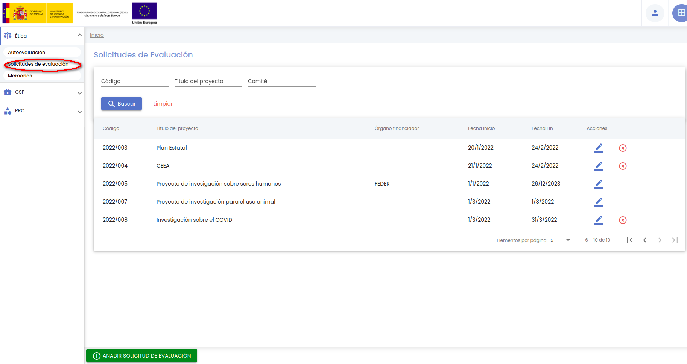
Los campos disponibles en el formulario de la búsqueda son:
- Código: código de referencia de la solicitud de evaluación. Tiene el formato YYYY/secuencia, donde YYYY es el año en el que ha dado de alta la solicitud de evaluación y secuencia en un código secuencia desde 001 hasta 999 relativo al año. Cuando se cambie de año se vuelve a empezar en 001.
- Título del proyecto: nombre o título del proyecto de investigación el cual se va a someter a la evaluación por parte del comité de ética.
- Comité: es un desplegable en el que el personal de investigación puede seleccionar entra las siguiente opciones:
- CEI
- CEEA
- CBE
Tras pulsar el botón “Buscar”, se muestra el listado de solicitudes de evaluación que cumplan con los parámetros introducidos en el formulario y que sean solicitudes dadas de alta por el propio personal o aquellas en las que esta como responsable de una de sus memorias. Los responsables de memoria pueden modificar los datos de la memoria y de su solicitud de evaluación.
Al igual que el resto de listados de la aplicación, el resultado de la búsqueda es un listado compuesto por una tabla paginada, con cinco columnas de información y una última columna de acciones.
Desde este listado el personal de investigación puede realizar las siguientes acciones:
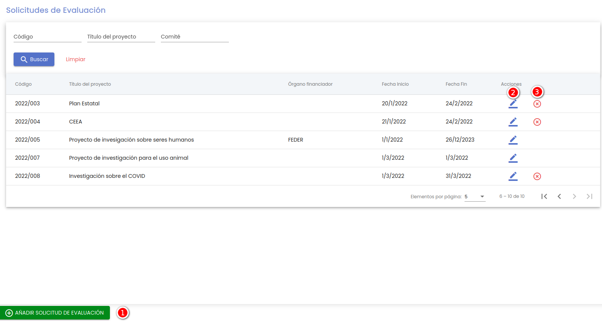
- Añadir solicitud de evaluación: este botón se encuentra en la parte inferior de la pantalla en el "Área de acciones", permite al personal de investigación introducir una nueva solicitud de evaluación.
- Editar: este botón representado por el icono
 y situado en la última columna "Acciones" de la tabla, permite al personal de investigación modificar los datos de una solicitud de evaluación.
y situado en la última columna "Acciones" de la tabla, permite al personal de investigación modificar los datos de una solicitud de evaluación. - Eliminar: este botón representado por el icono y situado en la última columna "Acciones" de la tabla, permite al personal de investigación eliminar la solicitud de evaluación. Sólo se puede eliminar una solicitud de evaluación sino se ha creado todavía la memoria o si la memoria o memorias asociadas están en los estados "En elaboración" o en "Completada", es decir, no se han enviado a "Secretaría" para su evaluación.
3.1 Añadir solicitud de evaluación¶
Tras pulsar este botón "AÑADIR SOLICITUD DE EVALUACIÓN" se carga en pantalla el formulario de "Datos generales" de una solicitud de evaluación. A esta pantalla también se llega desde la pantalla de autoevaluación cuando se muestra la ventana emergente informando de que el proyecto de investigación se tiene que someter a una comisión de ética y se le pregunta al personal de investigación si desea empezar a rellenar en ese momento la solicitud de evaluación y le da al botón de "Aceptar".
En la creación de una nueva solicitud de evaluación se deben de informar los siguientes bloques de datos:
- Datos generales: conjunto de datos de información general sobre el proyecto que se va a someter a la evaluación de aspectos éticos.
- Equipo investigador: conjunto de personas que forman parte del equipo investigador del proyecto.
Una vez introducidos todos los datos obligatorios de los dos formularios, se activará el botón "Guardar" situado en la parte inferior de la pantalla en el "Área de acciones". Este botón guarda toda la información aportada tanto en el apartado "Datos generales" como en el apartado "Equipo investigador".
3.1.1 Datos generales¶
A continuación se describe cada uno de los campos solicitados en este formulario:
- Título: campo obligatorio donde se debe de introducir el título del proyecto para el que se presenta la solicitud de evaluación de ética. Es un campo de texto libre con un máximo de 250 caracteres.
- Tipo de actividad: campo obligatorio donde se debe de seleccionar uno de los tres posibles valores:
- Investigación tutelada: si se selecciona Investigación tutelada se mostrará un nuevo campo "Tipo de investigación tutelada"
- Práctica docente
- Proyecto de investigación
- Tipo de investigación tutelada:sólo es visible en el caso de que en el campo "Tipo de actividad" se escoja la opción de "Investigación tutelada". En este caso este campo es obligatorio y se debe de seleccionar uno de los tres posibles valores:
- Tesis Doctoral
- Trabajo Fin de Grado
- Trabajo Fin de Máster
- Director/a o Tutor/a:campo sólo disponible si en "Tipo de actividad" se selecciona "Investigación tutelada". Es un campo obligatorio en este caso y debe cumplimentarse seleccionando una persona disponible a través del buscador proporcionado (buscador de personas).
- ¿Se dispone de financiación para realizar el proyecto?: campo obligatorio donde se debe de seleccionar el valor "Sí" o "No" dependiendo de si el proyecto dispone de financiación o no. En caso de que el proyecto disponga de financiación se mostrarán tres nuevos campos obligatorios: "Órgano financiador", "Estado" e "Importe financiación"
En caso de que se indique que el proyecto no dispone de financiación, se mostrarán los tres campos "Órgano financiador", "Estado" e "Importe financiación", pero su cumplimentación será opcional:
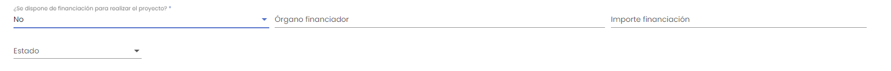
- Órgano financiador: campo obligatorio en el caso de que en el campo "¿Se dispone de financiación para realizar el proyecto?" se escoja la opción de "Sí" y opcional en el caso se seleccione el valor "No". Se puede introducir el nombre del órgano financiador del proyecto. Es un campo de texto libre con un máximo de 250 caracteres.
- Estado: campo obligatorio en el caso de que en el campo "¿Se dispone de financiación para realizar el proyecto?" se escoja la opción de "Sí" y opcional en el caso se seleccione el valor "No". Se puede seleccionar uno de los tres posibles estados:
- Concedido
- Denegado
- Solicitado
- Importe financiación: campo obligatorio en el caso de que en el campo "¿Se dispone de financiación para realizar el proyecto?" se escoja la opción de "Sí" y opcional en el caso se seleccione el valor "No". Se puede introducir el importe de la financiación del proyecto. Es un campo numérico que admite dos decimales. Los decimales van separados por la coma. No se usa separados de miles.
- Fecha inicio: campo obligatorio donde se debe de introducir la fecha de inicio del proyecto. Se puede introducir la fecha de forma manual o con la ayuda del calendario.
- Fecha fin: campo obligatorio donde se debe de introducir la fecha de finalización del proyecto. Se puede introducir la fecha de forma manual o con la ayuda del calendario. La duración del proyecto no podrá ser superior a 5 años (esta duración es configurable para el personal de administración del SGI).
- Resumen: campo obligatorio donde se debe de introducir el resumen del proyecto. Es un campo de texto libre con un máximo de 4000 caracteres. El personal de investigación puede modificar el tamaño de la caja de texto de este campo, para ello deberá situar el cursor sobre su esquina inferior izquierda (rayado gris), cuando el cursor cambie de aspecto, deberá pulsar con el botón izquierdo del ratón y arrastrar sin soltar.
- Valor social: campo obligatorio donde se debe seleccionar uno de los siguientes valores:
- Investigación fundamental
- Investigación aplicada a la prevención, diagnóstico o tratamiento de alteraciones o de enfermedades físicas, psíquicas u otras anomalías o de sus efectos en los seres humanos, los animales o las plantas.
- Investigación aplicada a la evaluación, detección, regulación o modificación de las condiciones fisiológicas, psicológicas o sociales en los seres humanos, los animales o las plantas
- Investigación aplicada al desarrollo y la fabricación de aparatos, ayudas técnicas o informáticas, fármacos, alimentos, piensos y otras sustancias o productos, así como la realización de pruebas para comprobar su calidad, eficacia y seguridad
- Investigación aplicada a la protección o mejora de las condiciones sociales, políticas, económicas o ambientales en interés del bienestar y/o la salud de los seres humanos.
- Investigación aplicada al bienestar de los animales y/o a la mejora de las condiciones de producción de los animales y las plantas.
- Investigación dirigida a la protección y conservación de las especies y del medio natural.
- Enseñanza superior o la formación para la adquisición o mejora de las aptitudes profesionales.
- Investigación jurídica o médico-legal.
- Otra finalidad.
En caso de que se seleccione el valor "Otra finalidad" se debe de introducir de forma obligatoria el campo "Especificar"
Este campo corresponderá con el apartado 1.1 VALOR SOCIAL DEL PROYECTO del formulario de la memoria, siendo únicamente modificable desde esta pantalla de datos generales. En el formulario de memoria se mostrará en modo consulta tomando el valor introducido en esta pantalla de datos generales
-
Especificar: sólo es visible en el campo de que en el campo "Valor social" se escoja la opción "Otra finalidad". En este caso este campo es obligatorio y de debe de introducir un campo de texto libre con un máximo de 2000 caracteres. El personal de investigación puede modificar el tamaño de la caja de texto de este campo, para ello deberá situar el cursor sobre su esquina inferior izquierda (rayado gris), cuando el cursor cambie de aspecto, deberá pulsar con el botón izquierdo del ratón y arrastrar sin soltar.
-
Objetivos científicos: campo obligatorio donde se debe de introducir los principales objetivos científicos del proyecto. Es un campo de texto libre con un máximo de 2000 caracteres. Este campo corresponderá con el apartado 3.1 OBJETIVOS CIENTÍFICOS DEL PROYECTO del formulario de la memoria, siendo únicamente modificable desde esta pantalla de datos generales. En el formulario de memoria se mostrará en modo consulta tomando el valor introducido en esta pantalla de datos generales.
- Diseño metodológico: campo obligatorio donde se debe de introducir una descripción del diseño metodológico del proyecto. Es un campo de texto libre con un máximo de 2000 caracteres. Este campo corresponderá con el apartado 3.2 DISEÑO METODOLÓGICO DEL PROYECTO del formulario de la memoria, siendo únicamente modificable desde esta pantalla de datos generales. En el formulario de memoria se mostrará en modo consulta tomando el valor introducido en esta pantalla de datos generales.
Una vez introducidos todos los campos obligatorios del formulario de "Datos generales", se activará el botón "GUARDAR". Se mostrará el icono de aviso de cambios sin guardar, tanto en el apartados "Datos generales" como en "Equipo investigador".
Aunque hasta el momento solo se hayan informado los datos del formulario de "Datos generales", sin haber introducido ningún dato en el apartado "Equipo investigador" se muestra con el icono aviso de cambios sin guardar sobre este apartado debido a que de forma automática se introduce en el Equipo investigador a la persona que está realizando la solicitud de evaluación
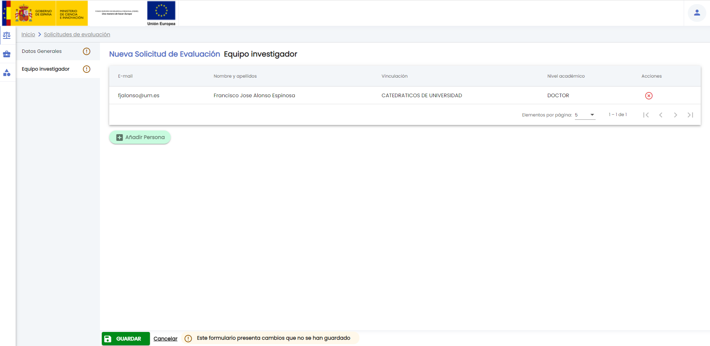
Si se pulsa el botón "Guardar" se crea la solicitud de evaluación con los datos generales del proyecto (que serán comunes para todas las memorias que se vayan a crear relacionadas con la solicitud) y con una persona en el equipo investigador (la persona que ha creado la solicitud de evaluación). Adicionalmente se deberán añadir al equipo todas las personas que van a formar parte del proyecto y que van a realizar alguna tarea en alguna de las memorias. Se describe este punto en el apartado Equipo investigador.
Tras pulsar el botón "Guardar" se muestra un mensaje de confirmación.
3.1.2 Equipo investigador¶
Muestra en una tabla el listado de miembros del equipo investigador del proyecto para el que solicita la evaluación ética. Por defecto, cuando se crea una solicitud de evaluación se añade automáticamente al equipo a la persona que está realizando la solicitud:
La persona solicitante puede añadir al resto de personas del equipo de investigación en el momento de creación de la solicitud o bien introducir esta información posteriormente. Para crear una solicitud de evaluación solamente es necesario que la persona solicitante figure en el equipo, y esto se realiza de forma automática.
Desde este listado se pueden realizar las siguientes acciones:
- Añadir persona: Acción disponible a través del botón situado en la parte inferior del listado de miembro del equipo.
- Eliminar: Acción representada por el icono
 situado en la última columna "Acciones" de la tabla. Permite eliminar a un miembro del equipo. En la creación de una solicitud de evaluación de pueden eliminar todas las personas excepto a la persona que esta creando la solicitud de evaluación.
situado en la última columna "Acciones" de la tabla. Permite eliminar a un miembro del equipo. En la creación de una solicitud de evaluación de pueden eliminar todas las personas excepto a la persona que esta creando la solicitud de evaluación.
3.1.2.1 Añadir persona¶
Se pueden añadir nuevos miembros pulsando el botón "Añadir Persona". Se abrirá un formulario que requerirá únicamente como campo obligatorio la selección de la persona. El resto de campos (Nombre y apellidos, Vinculación y Nivel académico son datos informativos obtenidos de la persona seleccionada y de los datos almacenados en la Universidad)
El campo "Persona" es un campo editable donde se puede introducir un texto (parte del nombre, apellidos o del email de una persona) que hará que se muestra una lista dinámica filtrada por el nombre, apellidos y email de las personas que coincidan con el texto introducido. Se podrá seleccionar una persona del listado mostrado o bien pulsar sobre el icono de la lupa para abrir la ventana del formulario genérico de búsquedas de personas en la Universidad mostrado en la siguiente imagen (filtrado por el campo introducido en el texto en caso de que se haya introducido alguna palabra, sino mostrará los campos de búsqueda vacíos).
El personal de investigación podrá seleccionar a la persona pulsando sobre el icono . Una vez seleccionada una persona se mostrará en el campo "Persona" el nombre, apellidos y email de la persona seleccionada y se recuperará la información sobre la vinculación y la categoría de la persona
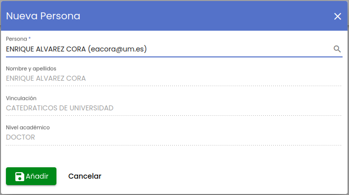
Al pulsar sobre el botón "Añadir" la persona se añadirá al equipo mostrando en la tabla de miembros del equipo de investigación del proyecto un fila mas que representa a la persona que se acaba de añadir.
Si se pulsa el botón "Guardar" se crea la solicitud de evaluación con los datos generales del proyecto (que serán comunes para todas las memorias que se vayan a crear relacionadas con la solicitud) y con las personas del equipo investigador.
Se muestra un mensaje confirmando que la solicitud de evaluación se ha creado correctamente.
3.2 Editar solicitud de evaluación¶
La edición de una solicitud de evaluación está disponible a través del botón editar  desde el listado de solicitudes de evaluación.
desde el listado de solicitudes de evaluación.
Tras pulsar la acción editar se muestra el detalle de la solicitud de evaluación, mostrando el apartado "Datos generales" y dando acceso al resto de apartados de la solicitud de evaluación:
- Datos generales: conjunto de datos de información general sobre el proyecto para el que se solicita la evaluación de ética. Se muestran los datos que fueron informados durante la creación de la solicitud, pudiendo aportar modificaciones sobre los mismos.
- Equipo investigador: conjunto de personas que forman parte del equipo investigador del proyecto. Esta información también fue aportada durante la creación de la solicitud, pero pueden introducirse cambios sobre la misma, añadiendo, modificando o eliminando personas al equipo.
- Asignación de tareas: conjunto de tareas a realizar por cada una de las personas del equipo investigador. Las tareas se añaden a nivel de memoria, es decir, se indicará qué tareas realiza a cada persona para cada una de las memorias que se incluyen en la solicitud.
- Memorias: Una solicitud podrá contener más de una memoria en función de la naturaleza del proyecto, pues éste podrá requerir que sea evaluada por uno o más de los comités éticos. Un proyecto podrá requerir, por ejemplo, que sea evaluado por el Comité ético de investigación con seres humanos y por el comité ético en bioseguridad. Las memorias recogen el detalle de información que requieren los comités de investigación para valorar el proyecto. Existe un tipo de memoria para cada uno de los tres comités:
- Comité de ética para las investigaciones relacionadas con seres humanos, muestras humanas y/o datos procedentes de población humana que requieren protección, llamada memoria M10.
- Comité de ética de experimentación animal, llamada memoria M20.
- Comités ético de bioseguridad en la experimentación, llamada memoria M30.
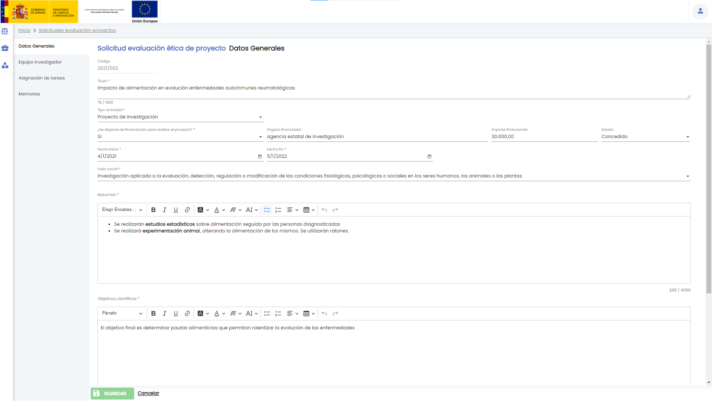
Antes de proceder a añadir una memoria en la solicitud de evaluación deben guardarse todas las modificaciones que se hubieran introducido en los apartados datos generales, equipos investigador o asignación de tareas. Las memorias son formularios con un gran volumen de datos y con un flujo de navegación propio. Por ello cuando se añade una memoria se produce un cambio de contexto en las pantallas del SGI, debiendo guardar todos los cambios de la solicitud de evaluación modificados hasta el momento.
Se explican a continuación cada uno de los apartados de los que consta el detalle de una solicitud de evaluación y sobre los que se pueden aportar modificaciones o nueva información una vez que la solicitud ya ha sido creada con sus datos iniciales.
3.2.1 Datos generales¶
Apartado con los datos de información básica de una solicitud de evaluación.
En el apartado Datos generales descrito para el proceso de creación de una nueva solicitud de evaluación se puede ver la descripción detallada de cada campo. Aparte de los mencionados en el proceso de la creación, cuando se accede a los Datos generales de una solicitud de evaluación para modificación se observan los siguiente campos adicionales:
- Código: código de referencia de la solicitud de evaluación. Tiene el formato YYYY/secuencia, donde YYYY es el año en el que ha dado de alta la solicitud de evaluación y secuencia en un código secuencia desde 001 hasta 999 relativo al año. Cuando se cambie de año se vuelve a empezar en 001.
- Código solicitud convocatoria: sólo es visible si la solicitud de convocatoria ha sido creada automáticamente a partir de una solicitud de convocatoria (módulo CSP del SGI). Representa al código interno de la solicitud de convocatoria. Es un campo de consulta, únicamente se muestra como información adicional.
- ¿Si se rechaza su solicitud de financiación ejecutará el proyecto con fondos propios?: sólo es visible si la solicitud de convocatoria ha sido creada automáticamente a partir de una solicitud de convocatoria (módulo CSP del SGI). En estos casos es un campo obligatorio.
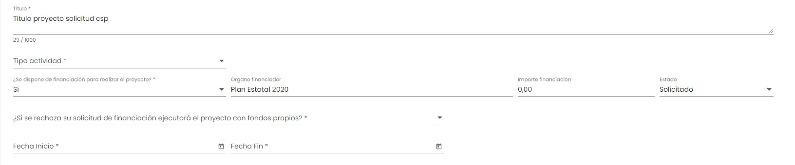
El proceso de creación de una solicitud de evaluación de ética puede iniciarse de forma automática en el momento de tramitar una solicitud de proyecto desde el módulo CSP. En las solicitudes de proyecto del módulo CSP se dispone de un apartado "Autoevaluación ética" que contiene unas preguntas básicas que permiten determinar si el proyecto deberá someterse a evaluación por parte de alguno de los comités de ética. En esta situación, cuando la solicitud de proyecto pasa de estado "Borrador" a estado "solicitada" (o un estado superior a éste"), se crea de forma automática una solicitud de evaluación de ética, siempre y cuando alguna de las respuestas dadas al formulario de Autoevaluación de ética hubiera sido afirmativa. En la siguiente imagen se muestra los datos generales de una solicitud de evaluación generada a partir de una solicitud de convocatoria del módulo de CSP del SGI.
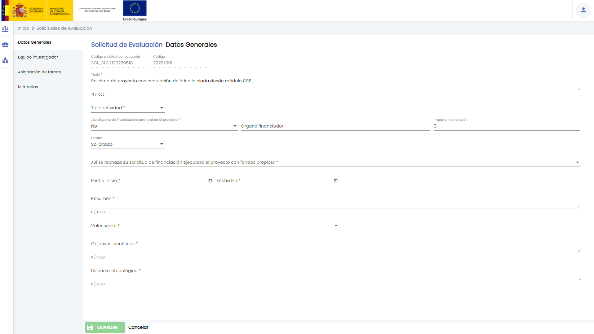
Como la solicitud de proyecto del módulo de CSP no contiene toda la información necesaria para crear la solicitud de evaluación de ética, ésta debe ser completada aportando todos los campos obligatorios. La siguiente imagen muestra en color rojo todos los campos que deben ser aportados para finalizar la cumplimentación de la solicitud de evaluación de ética una vez que su creación se ha iniciado de forma automática desde el módulo CSP.
3.2.2 Equipo investigador¶
Muestra en una tabla el listado de miembros del equipo investigador del proyecto.
En la pantalla "Equipo investigador" se puede ver y gestionar el listado de miembros que constituyen el equipo de investigación del proyecto. Desde este listado el personal de investigación puede realizar las siguientes acciones:
- Añadir persona: este botón se encuentra en la parte inferior del listado de miembro del equipo, permite al personal de investigación introducir un nueva persona el equipo investigado.
- Eliminar: este botón representado por el icono y situado en la última columna "Acciones" de la tabla, permite al personal de investigación eliminar la persona del equipo. Únicamente se puede eliminar una persona si todas las memorias en las que este asignada en la propia solicitud de evaluación se encuentra en uno de estos estados:
-
- En elaboración
- Completada
- Favorable Pendiente de Modificaciones Mínimas
- Pendiente de correcciones
3.2.2.1 Añadir persona¶
Ver funcionalidad descrita en el apartado Añadir persona de "Nueva solicitud evaluación".
3.2.2.2 Eliminar persona¶
Cuando se pulsa el icono de eliminar persona se muestra una ventana emergente con un mensaje de confirmación.
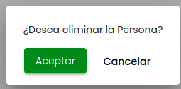
En caso de responder afirmativamente (botón "Aceptar") el miembro del equipo desaparecerá del listado como se puede ver en la siguiente imagen y se eliminarán sus tareas asignadas en caso de que las tuviese). Se muestra el icono de la admiración en el menú de "Equipo investigador" y el mensaje de información en la parte de abajo de la pantalla en la zona del "Área de acciones" para recordar al personal de investigación que debe de pulsar el botón GUARDAR para que los cambios realizados (en este caso la eliminación de una persona en el equipo) se consoliden.
En caso de "Cancelar" no se elimina la persona y se sigue mostrando en el listado.
Si se pulsa el botón "GUARDAR" se modifica la solicitud de evaluación con los nuevos datos introducidos o con los cambios realizados en cada una de las pantallas (Datos generales, Equipo investigador o Asignación de tareas)
Se muestra un mensaje de que la solicitud de evaluación del proyecto se ha modificado correctamente igual que el de la siguiente imagen.
3.2.3 Asignación de tareas¶
Muestra el listado de tareas asignadas a las personas que forman parte del equipo en la memoria o memorias de la solicitud de evaluación.
Los datos introducidos en esta pantalla corresponderán con el apartado 2.1 PERSONAL QUE LLEVARÁ A CABO LAS TAREAS del formulario de la memoria, únicamente se podrá modificar desde esta pantalla, en el formulario se mostrará en modo consulta sacando los valores introducidos de este listado.
Desde este listado el personal de investigación puede realizar las siguientes acciones:
- Añadir tarea: este botón se encuentra en la parte inferior del listado tareas del equipo, permite al personal de investigación introducir una nueva tarea de uno de los miembros del equipo en una de las memorias de la solicitud.
- Editar: este botón representado por el icono y situado en la última columna "Acciones" de la tabla, permite al personal de investigación modificar los datos de una tarea asignada a un miembro del equipo.
- Eliminar: este botón representado por el icono y situado en la última columna "Acciones" de la tabla, permite al personal de investigación eliminar la tarea asignada a un miembro del equipo.
3.2.3.1 Añadir tarea¶
Para poder añadir una tarea a un persona es necesario que previamente:
- se haya añadido la persona en el equipo (la persona debe de estar en el listado de la pantalla "Equipo investigador")
- se haya creado la memoria (la memoria debe de estar en el listado de la pantalla "Memorias")
Al pulsar sobre el botón "Añadir Tarea", se abrirá un formulario como el mostrado en la siguiente imagen.
A continuación se describe cada uno de los campos solicitados en este formulario:
- Persona del equipo: campo obligatorio donde se debe de seleccionar uno de los miembros del equipo dados de alta en la pantalla "Equipo investigador". Se muestra un listado con el nombre y apellidos de los miembros del equipo investigador de la solicitud de evaluación.
- Memoria: campo obligatorio donde se debe de seleccionar una de las memorias dadas de alta en la pantalla "Memorias". Se muestra un listado con la referencia de las distintas memorias de la solicitud de evaluación.
- Tarea: campo obligatorio de texto libre donde se debe de introducir la descripción de la tarea que va a realizar la persona cuando la asignación de la tarea es para una memoria del comité CEI o CBE. Si la memoria es del comité CEEA el campo "Tarea" no será un campo de texto libre sino que se mostrará un desplegable con los siguientes valores donde el personal de investigación debe de seleccionar uno de ellos:
- Diseño de proyecto y procedimientos
- Manipulación de animales o realización de procedimientos
- Eutanasia
- Experiencia/Formación: campo obligatorio de texto libre donde se debe de introducir la experiencia que tiene la persona haciendo la tarea encomendada cuando la memoria es del comité CEI. Si la memoria es del comité CBE se debe de introducir la formación de la persona. Y si la memoria es del comité CEEA el campo "Experiencia/Formación" no será un campo de texto libre sino que se mostrará un desplegable con los siguientes valores donde el personal de investigación debe de seleccionar uno de ellos desplegable con los valores:
- A: Cuidado de los animales
- B: Eutanasia de los animales
- C: Realización de los procedimientos
- D: Diseño de los proyectos y procedimientos
- E: Responsable de la supervisión «in situ» del bienestar y cuidado de los animales
- F: Veterinario designado
- G: Sin especificar
- H: No requiere
- Organismo: campo obligatorio para las tareas asignadas a memorias del comité CEEA y CBE donde se debe de introducir el organismo donde se ha formado la persona. Para las taras del comité CEI no será visible dicho campo.
- Año: campo obligatorio para las tareas asignadas a memorias del comité CEEA y CBE donde se debe de introducir el año de obtención de la formación de la persona. Para las taras del comité CEI no será visible dicho campo.
En la siguiente imagen se muestra los campos del formulario pedidos para dar de alta una tarea del comité CEI

En la siguiente imagen se muestra los campos del formulario pedidos para dar de alta una tarea del comité CEEA. En este caso la tarea se debe seleccionar del listado proporcinado:
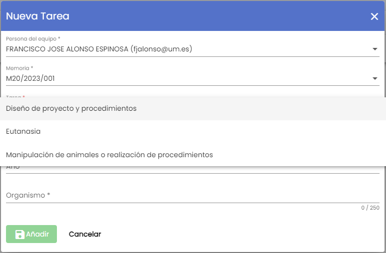
Del mismo modo la experiencia/formación también debe ser seleccionada del listado proporcionado:
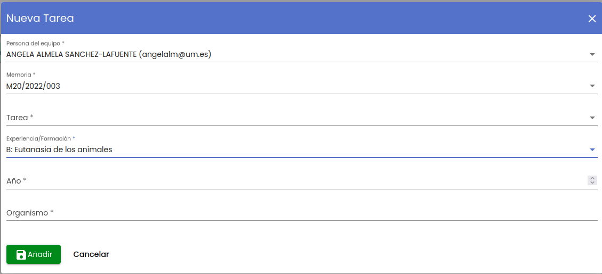
En la siguiente imagen se muestra los campos del formulario pedidos para dar de alta una tarea del comité CBE
Al pulsar sobre el botón "Añadir" la tarea se añadirá al listado de asignación de tareas de la solicitud de evaluación mostrando el icono de la admiración en el menú de "Asignación de tareas" y el mensaje de información en la parte de abajo de la pantalla en la zona del "Área de acciones" para recordar al personal de investigación que debe de pulsar el botón GUARDAR para que los cambios realizados (en este caso una nueva asignación de tarea) se consoliden.
Si se pulsa el botón "GUARDAR" se modifica la solicitud de evaluación con los nuevos datos introducidos o con los cambios realizados en cada una de las pantallas (Datos generales, Equipo investigador o Asignación de tareas)
Se muestra un mensaje de que la solicitud de evaluación del proyecto se ha modificado correctamente igual que el de la siguiente imagen.
3.2.3.2 Editar tarea¶
Se abre una pantalla que muestra un formulario con los datos de la tarea, es idéntico al utilizado durante el alta de una tarea, dejando la posibilidad de modificar cualquiera de los campos del formulario (ver funcionalidad descrita en el apartado Añadir tarea para mas detalle).
En la siguiente imagen se muestra el formulario de edición de una tarea.
Al pulsar sobre el botón "Aceptar" la tarea se modificará y los cambios se verán reflejados en el listado de asignación de tareas de la solicitud de evaluación mostrando el icono de la admiración en el menú de "Asignación de tareas" y el mensaje de información en la parte de abajo de la pantalla en la zona del "Área de acciones" para recordar al personal de investigación que debe de pulsar el botón GUARDAR para que los cambios realizados (en este caso una nueva asignación de tarea) se consoliden.
Si se pulsa el botón "GUARDAR" se modifica la solicitud de evaluación con los nuevos datos introducidos o con los cambios realizados en cada una de las pantallas (Datos generales, Equipo investigador o Asignación de tareas)
Se muestra un mensaje de que la solicitud de evaluación del proyecto se ha modificado correctamente igual que el de la siguiente imagen.
3.2.3.3 Eliminar tarea¶
Cuando se pulsa el icono de eliminar tarea se muestra una ventana emergente con un mensaje de confirmación.
En caso de responder afirmativamente (botón "Aceptar") la tarea desaparecerá del listado de tareas. Se muestra el icono de la admiración en el menú de "Asignación de tareas" y el mensaje de información en la parte de abajo de la pantalla en la zona del "Área de acciones" para recordar al personal de investigación que debe de pulsar el botón GUARDAR para que los cambios realizados (en este caso la eliminación de una tarea) se consoliden.
3.2.4 Memorias¶
Muestra el listado de memorias que se van a evaluar de la solicitud de evaluación. Cuando se edita la primera vez una solicitud de evaluación el listado estará vacío, en otro caso se muestra la siguiente imagen.
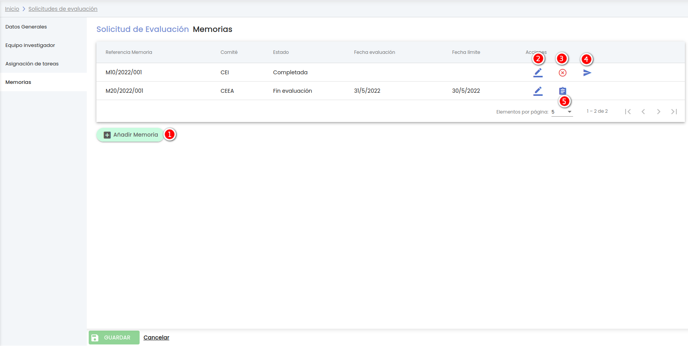
Desde este listado el personal de investigación puede realizar las siguientes acciones:
- Añadir memoria: este botón se encuentra en la parte inferior del listado de memorias, permite al personal de investigación introducir una nueva memoria para su evaluación. Provoca un cambio de contexto.
- Editar: este botón representado por el icono y situado en la última columna "Acciones" de la tabla, permite al personal de investigación modificar los datos de una memoria. Provoca un cambio de contexto. Disponible para el creador y para el responsable de la memoria.
-
Eliminar: este botón representado por el icono y situado en la última columna "Acciones" de la tabla, permite al personal de investigación eliminar la memoria. Únicamente se puede eliminar una memoria por la persona que ha creado la memoria y si se encuentra en uno de estos estados:
- En elaboración
- Completada
- Enviar a secretaría: este botón representado por el icono y situado en la última columna "Acciones" de la tabla, permite al personal de investigación enviar su memoria a la comisión de ética para su evaluación. Una vez cumplimentado todo el formulario y documentación de la memoria el personal de investigación debe de pulsar este botón para que su memoria sea gestionada y evaluada por la comisión. El responsable de la memoria no podrá enviar a secretaría la memoria, únicamente modificar sus datos.
- Enviar a secretaría retrospectiva: este botón representado por el icono y situado en la última columna "Acciones" de la tabla, permite al personal de investigación enviar la retrospectiva de la memoria a la comisión de ética para su evaluación. Una vez cumplimentado todo el formulario de retrospectiva y su documentación el personal de investigación debe de pulsar este botón para que su retrospectiva de la memoria sea gestionada y evaluada por la comisión. El responsable de la memoria no podrá enviar a secretaría la retrospectiva de la memoria, únicamente modificar sus datos.
A continuación se detalla el significado de cada una de las columnas de información del listado:
- Referencia memoria: código que representa a la memoria, es un dato generado automáticamente y tiene el formato Mxx/YYYY/secuencia donde xx sera 10, 20 o 30, YYYY será el año, secuencia será un código secuencial que empieza en 000 cada año y comité y va hasta 999 si es de tipo "Nueva", si es de tipo "Ratificación" lleva una R al final (Mxx/YYYY/secuenciaR), y si es de tipo "Modificación" se copia la referencia de la memoria original y se pone al final MRX donde X es un secuencial de las modificaciones que haya tenido la memoria.
- Comité: comité que va a realizar la evaluación de le memoria.
- Estado: estado de la memoria, puede tener uno de los valores comentados en el apartado Estados de una memoria
- Fecha evaluación: dependiendo del estado es la fecha de evaluación de la convocatoria de reunión en la que ha sido evaluada la memoria o es la fecha de evaluación de la próxima convocatoria de reunión en la que puede ser evaluada la memoria.
- Fecha límite: dependiendo del estado es la fecha límite de la convocatoria de reunión en la que ha sido evaluada la memoria o fecha límite hasta la que se aceptan memorias de la próxima convocatoria de reunión en la que puede ser evaluada la memoria.
Las memorias por tratarse de entidades complejas y con mucha información que necesita su propio flujo de navegación, se consideran como un cambio de contexto, que le obliga al personal de investigación primero a guardar la solicitud de evaluación antes de ir a realizar cualquier cambio en una memoria.
El cambio de contexto aplica cuando un personal de investigación está creando o editando una entidad de contenido (Solicitud de evaluación) y requiere de la edición o creación de una entidad relacionada (Memoria), que pueda también tener una navegación interna a través de un menú secundario. En estos casos, en el momento del cambio de edición hacia la entidad relacionada (Memoria), se realizará un cambio de contexto, esto es, un cambio de entidad que recargará el espacio de trabajo con los datos y navegación de la nueva entidad (Memoria) obligando a guardar los datos de la entidad anterior si no quiere perderlos (Solicitud de evaluación).
En el caso de que existan datos sin guardar de la solicitud de evaluación al pulsar sobre el botón de "Añadir memoria" o sobre el icono de "Editar memoria" se muestra la siguiente imagen.
Si se pulsa sobre el botón "Continuar y perder los datos" se perderán los últimos datos que se han modificado en la solicitud de evaluación y que no fueron guardados. Si se pulsa sobre el botón "Cancelar" te mantiene en la misma pantalla sin ir a la creación o edición de la memoria, para que se pueda dar al botón "GUARDAR" para guardar los datos modificados de la solicitud de evaluación.
3.2.4.1 Añadir memoria¶
Tras pulsar el botón "Añadir memoria" se realizará un cambio de contexto cambiando la pantalla actual (navegación de una solicitud de evaluación) a la pantalla de navegación de una memoria cargando en pantalla el formulario de "Datos generales" de una memoria.
A continuación se describe cada uno de los campos solicitados en este formulario:
-
Comité: campo obligatorio donde se debe de seleccionar uno de los tres posibles valores:
- CEI (Comité de Ética de Investigación)
- CEEA (Comité de Ética de Experimentación Animal)
- CBE (Comité de Ética de Bioseguridad en Experimentación)
Indica el comité que debe de valorar la memoria.
- Tipo de memoria: campo obligatorio donde se debe de seleccionar uno de los tres posibles valores:
- Nueva: el personal de investigación debe de cumplimentar todos los datos del formulario de memoria. Disponible si en comité se ha seleccionado CEI, CEEA o CBE
- Ratificación: Es un tipo de memoria que solo está habilitado para el comité CEI. Las memorias de tipo "Ratificación" se utilizarán cuando ya se dispone de un informe procedente de un comité externo, como puede ser el comité designado por un organismo con el que la Universidad colabora en la ejecución del proyecto. También podrán ser utilizadas para especificar un nuevo equipo de investigación diferente al que inicialmente se le hubiera otorgado el informe favorable para la ejecución del proyecto. El equipo de proyecto se deberá cumplimentar, como en cualquier memoria, en el apartado "Asignación de tareas" de la "Solicitud de evaluación". A partir de esta información se mostrará automáticamente cumplimentado el apartado 2.1 Personal que llevará a cabo las tareas con seres humanos, sus muestras y/o sus datosdel formulario de memoria. Al tratarse de una memoria de ratificación no será necesario cumplimentar el formulario, por lo que todos los apartados estarán desactivados (se mostrarán con el icono "candado"). Sólo estarán activos los apartados Documentación adicional,Aclaraciones al comité e Informe del comité o comisión del organismo externo. Este último apartado está vinculado al documento de autorización para el que se pide ratificación, siendo un documento que es obligatorio adjuntar en el apartado "Documentación" de la memoria. A modo de recordatorio, en el apartado de Datos generales de la memoria, tras indicar que se va a crear una memoria de tipo "ratificación", se mostrará un mensaje informativo a este respecto:
El mensaje anterior sólo se mostrará cuando la memoria de ratificación se encuentre en uno de los siguientes estados: "en elaboración", "favorable pendiente de revisión mínima", "pendiente de correcciones".
La siguiente imagen muestra el aspecto del bloque 5, donde estarán los únicos apartados habilitados en una memoria de tipo "ratificación", siendo el último apartado el referido al informe del comité o comisión que se pide ratificar. La única respuesta admitida es "Sí" para recordar que este documento deberá ser adjuntado en el apartado "Documentación".
-
- Modificación: el personal de investigación selecciona la memoria de la cual quiere hacer una modificación y se copian todos los datos introducidos en la memoria seleccionada para que en la nueva memoria ya tenga esos datos de partida y pueda realizar los cambios oportunos. Disponible si en comité se ha seleccionado CEI, CEEA o CBE
- Responsable memoria: campo opcional donde se debe de seleccionar la persona que el personal de investigación quiere poner como responsable de la memoria. Dicha persona podrá modificar los datos de la solicitud de evaluación y de la memoria. Lo que no puede hacer es "Enviar a secretaría" la memoria, dicha acción sólo puede hacerla la persona que ha creado la solicitud de evaluación y la memoria.
- Memoria original: sólo es visible en el caso de que en el campo "Tipo de memoria" se escoja la opción de "Modificación". En este caso este campo es obligatorio y se debe de seleccionar una de las memorias de la solicitud de evaluación de la cual se quiere copiar todos sus apartados. Las memorias disponibles serán aquellas que sean del mismo comité que la memoria que se está creando y que se encuentren en estado "Fin evaluación", es decir, cuenten con un dictamen "favorable".

- Título descriptivo:sólo es visible en el caso de que en el campo "Comité" se escoja la opción de "CEEA". En este caso este campo es opcional donde se debe de introducir el procedimiento y la especie animal. Este campo corresponderá con el apartado 3.3 TÍTULO DESCRIPTIVO del formulario de la memoria, únicamente se podrá modificar desde esta pantalla, en el formulario se mostrará en modo consulta sacando el valor introducido en este formulario.
Una vez introducidos todos los campos obligatorios del formulario de "Datos generales" se activa el botón "GUARDAR" y se muestra el icono del signo de admiración en los "Datos generales". Este icono indica que se han introducido cambios en el formulario (se han informado los campos) pero no se ha dado a "Guardar".
Si se pulsa el botón "GUARDAR" se crea la memoria con los datos generales. Se muestra un mensaje de que la memoria se ha creado correctamente igual que el de la siguiente imagen.

3.2.4.2 Editar memoria¶
La edición de una memoria (el botón del icono del lápiz) abre el formulario de "Datos generales" con los mismos campos que el formulario de creación donde el personal de investigación puede modificar los datos.
La edición de una memoria esta formada por los siguientes bloques de información:
- Datos generales: conjunto de datos de información general sobre la memoria que se quiere evaluar (ya informados durante la creación de la memoria).
- Formulario: conjunto de preguntas y respuestas que será diferente en función del material de investigación (humanos, animales o agentes biológicos) que forman el formulario de memoria que se va a evaluar.
- Documentación: listado de documentos adjuntados a la memoria.
- Seguimiento anual: conjuntos de preguntas y respuestas que forman el formulario del seguimiento anual que se va a evaluar.
- Seguimiento final: conjuntos de preguntas y respuestas que forman el formulario del seguimiento final que se va a evaluar.
- Retrospectiva: conjuntos de preguntas y respuestas que forman el formulario de retrospectiva que se va a evaluar.
- Evaluaciones: listado de evaluaciones por las que ha pasado la memoria, incluye el informe de evaluación y/o el informe favorable de la memoria y de los seguimiento anual y final.
- Versiones: listado de pdf generados a partir de los formularios de memoria, seguimiento anual, seguimiento final o retrospectiva enviados a secretaria.
- Solicitud evaluación: enlace a la solicitud de evaluación a la que pertenece la memoria, es una opción de menú de navegación para ir a la edición de la solicitud de evaluación.
Una vez introducidos los datos que se desean modificar o añadir en cualquiera de los bloques (datos generales, formulario, documentación, seguimiento anual, seguimiento final o retrospectiva), el personal de investigación podrá pulsar sobre el botón "GUARDAR" situado en la parte inferior de la pantalla en el "Área de acciones" para actualizar la memoria (sino se pulsa sobre el botón "GUARDAR" todos los cambios realizados se perderán)
3.2.4.2.1 Datos generales¶
Formulario con los datos de información básica de una memoria.
En el apartado de Añadir memoria se puede ver la descripción detallada de cada campo.
Los siguientes campos no se podrán modificar una vez creada la memoria:
- Referencia memoria
- Comité
- Tipo de memoria
Si la memoria se encuentra en estado "en subsanación" se mostrará un aviso, así como el comentario aportado por Secretaría donde se recoge las modificaciones que deben ser realizadas antes de poder incluir la memoria en una reunión de evaluación.
3.2.4.2.2 Formulario¶
Información específica de la solicitud de evaluación que será diferente en función del material de investigación (humanos, animales o agentes biológicos). El personal de investigación debe de responder a todas las preguntas sobre su diseño cuyas respuestas permitirán la evaluación ética, metodológica y legal del proyecto.
Únicamente se pueden realizar cambios en el formulario si la memoria esta en unos de estos estados :
- En elaboración: estado inicial de la memoria, la memoria al crearse se inicializará a este estado y permanecerá en él hasta que se cumplimente todos los apartados del formulario. Una vez completado todo el formulario se pasará al estado "Completada"
- Completada: estado al que se pasa la memoria de forma automática cuando el personal de investigación rellena todos los apartados de todos los bloques del formulario de memoria. Al finalizar el último el bloque 5 de la memoria se pone a este estado.
- En subsanación: estado al que el personal de gestión puede pasar la memoria una vez que ha sido enviada a secretaría y con carácter previo a ser incluida en una convocatoria de reunión de evaluación.
- Favorable pendiente de modificaciones mínimas: estado al que pasa la memoria de forma automática cuando se le da un dictamen "Favorable pendiente de modificaciones mínimas" en una convocatoria de reunión del comité. Podrá modificar únicamente aquellos apartados del formulario en los que el comité le ha puesto un comentario. Se identifican porque tiene el icono
- Pendiente de correcciones: estado al que pasa la memoria de forma automática cuando se le da un dictamen "Favorable pendiente de modificaciones mínimas" en una convocatoria de reunión del comité. Podrá modificar únicamente aquellos apartados del formulario en los que el comité le ha puesto un comentario. Se identifican porque tiene el icono
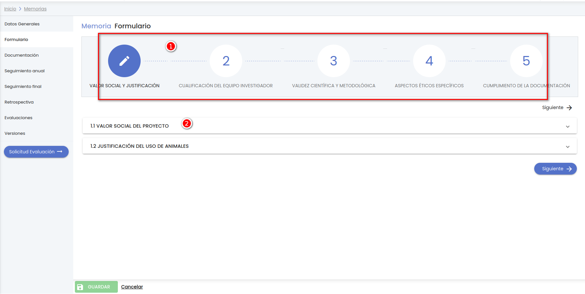
El formulario se divide en:
- Bloques del formulario: Conjunto de apartados. Será necesario responder a todos los apartados obligatorios del bloque para poder pasar al siguiente bloque. No se puede navegar del bloque 1 al bloque 3, sin pasar por el bloque 2. Los bloques son:
-
- Valor social y justificación
- Cualificación del equipo investigador
- Validez científica y metodológica
- Aspectos éticos específicos
- Cumplimiento de la documentación
Para pasar de un bloque a otro se pueden usar los botones de "Anterior" o "Siguiente" o bien pulsando directamente sobre el número del bloque (siempre y cuando ya se haya pasado por él) tal y como muestra la siguiente imagen. Del bloque 2 podremos pasar el bloque 1 o al bloque 3, pero no al bloque 4.
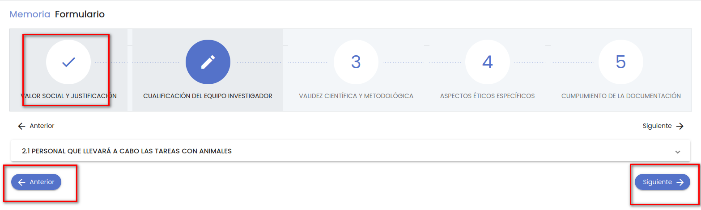
2. Apartados dentro de cada bloque: Dependiendo del material de investigación usado en el proyecto (humanos, animales o agentes biológicos) los apartados son diferentes. Será necesario responder a todas las preguntas de los apartados que sean obligatorias, es decir, las marcados con un asterisco.
En la siguiente imagen se puede ver que los apartados 1.1.1FIN ESPECÍFICO DEL PROYECTO y 1.2 JUSTIFICACIÓN DEL USO DE ANIMALES son apartados obligatorios que el personal de investigación debe de introducir un texto para poder guardar la información. El botón "GUARDAR" no se activará hasta que se hayan introducidos todos los apartados obligatorios.
En caso de pulsar el botón "Siguiente" sin haber introducir todos los apartados obligatorios se muestra la siguiente imagen indicando de que hay errores en la pantalla, indicando el apartado con el icono de error y resaltando en rojo la pregunta a contestar.
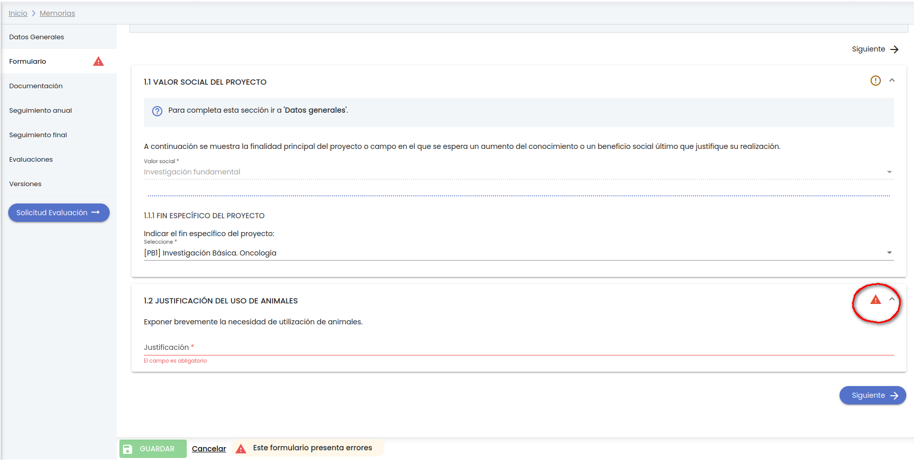
El botón "Guardar" se activará una vez que se registren cambios en el formulario. Es decir, una vez que se introduzca una respuesta en un apartado.
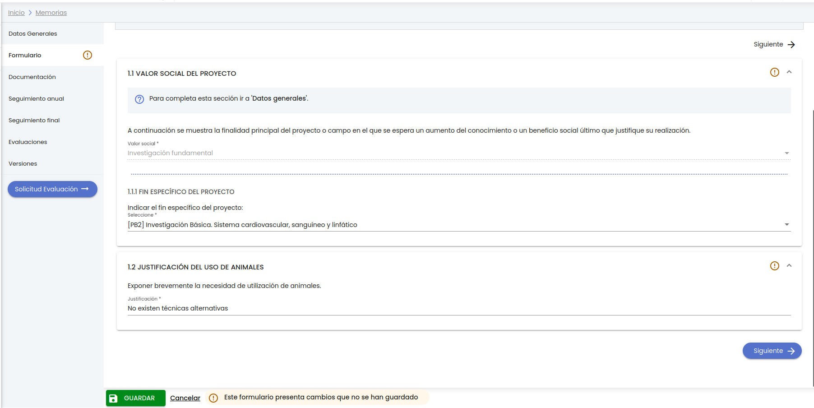
Con el botón "Siguiente" se podrá avanzar al siguiente bloque del formulario. Se puede avanzar al siguiente bloque sin haber terminado la cumplimentación del bloque en curso. Sin embargo, no será posible Guardar los cambios en el formulario hasta que no se hayan cumplimentado todas las preguntas obligatorias de todos los bloques del formulario que se hayan visualizado en pantalla. Aunque el botón Guardar esté activo (lo estará desde el momento en que se hayan introducido cambios en alguna respuesta del formulario), si se pulsa antes de haber cumplimentado todas las respuestas del bloque que esté siendo mostrado por pantalla (o de cualquier otro bloque al que se haya accedido previamente), se mostrará un error.
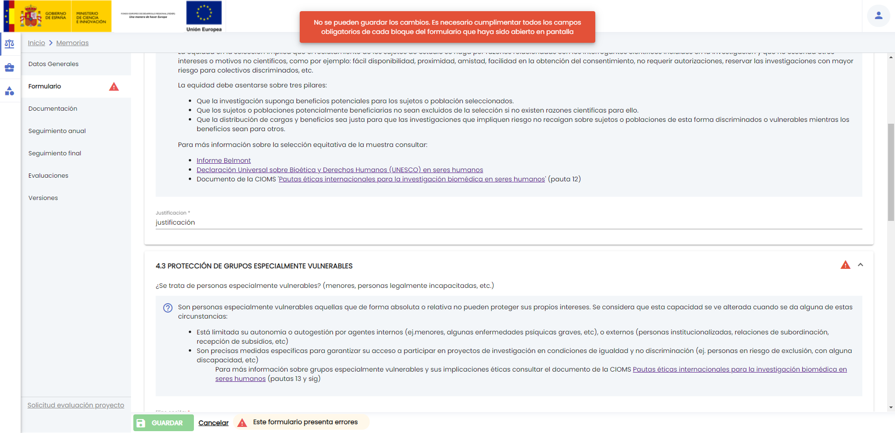
El mensaje de error se cerrará tras estar visible unos segundos. Todas las preguntas del bloque que estén pendientes de respuesta se visualizarán con el icono  .
.
El botón Guardar permanecerá desactivado hasta que sean cumplimentados todas las preguntas no sólo del bloque mostrado en pantalla sino de todos aquellos bloques que hubieran sido abiertos en pantalla.
Una vez introducidas todas las respuestas de los bloques que hubieran sido abiertos se activará el botón "Guardar". Se podrá Guardar el formulario sin haber finalizado su cumplimentación, siempre y cuando no se hayan ido abriendo todos los bloques en pantalla, lo que obligaría a tener que cumplimentar las preguntas obligatorias de cada bloque. Es decir, se podrán dejar bloques pendientes de respuesta siempre y cuando no se abra su contenido en pantalla.
Por seguridad y debido a la cantidad de información que existe en cada bloque se recomienda ir guardando cada bloque antes de pasar al siguiente, aunque no es necesario. El pulsar el botón "Siguiente" no supone que se guarden los cambios, la única forma de guardar la información es a través del botón "Guardar".
En el caso de que la memoria se encuentre en el estado "En elaboración" una vez contestados todos los apartados del bloque 5 de documentación y pulsar el botón "GUARDAR", la memoria se pasará del estado "En elaboración" al estado "Completada". En este momento el personal de investigación podrá ir la pantalla de "Documentación" para aportar los documentos requeridos de la memoria (los que ha contestado que "Sí" en los apartados del bloque 5 del formulario)
Cuando la memoria se encuentra en los estados "Favorable pendiente de correcciones mínimas" o "Pendiente de correcciones" únicamente se podrá modificar aquellos apartados en los que los miembros del comité evaluador han puesto comentarios indicando lo que tiene que cambiar o aportar el personal de investigación para dar como válido el apartado.
En la siguiente imagen muestra apartados que no se podrán modificar porque no tienen comentarios asociados (son válidos por el comité evaluador) representados por el icono  y apartados que necesitan que se modifiquen por parte del personal de investigación representados por el icono . Si se pincha sobre el apartado se muestra el detalle del comentario.
y apartados que necesitan que se modifiquen por parte del personal de investigación representados por el icono . Si se pincha sobre el apartado se muestra el detalle del comentario.
Si la memoria se encuentra evaluada y se han aportado comentarios generales sobre la misma se mostrará, en la cabecera de la página del Formulario el apartado "Comentarios generales, resaltado por el icono . A continuación se mostrará el contenido del comentario general. El aspecto de la pantalla es:
3.2.4.2.3 Documentación¶
Pantalla donde deben de adjuntarse los documentos obligatorios que se han puesto en el bloque 5 del formulario que se iban a aportar. En el formulario únicamente se indica si se va a aportar o no, es en esta pantalla donde se deben de adjuntar los documentos.
La pantalla esta dividida en 4 bloques de documentos:
- Memoria: permite adjuntar los documentos que necesita aportar el personal de investigación mencionados en el bloque 5 del formulario de la memoria. Se puede añadir un documento o eliminar un documento de los ya adjuntados si la memoria está en cualquier estado excepto en el estado "En secretaría" o "En evaluación". Se permite modificar documentos cuando la memoria ya ha obtenido un informe favorable por si se necesita añadir el documento con el formato oficial (existen ocasiones que durante al evaluación del comité el personal de investigación adjunta un documento pero con un formato que no es el adecuado, sin logos, sin firmas,etc).
- Seguimiento anual: permite ajuntar los documentos que necesita aportar el personal de investigación para el formulario de seguimiento anual (pdf de las publicaciones que se hubiesen generado con el proyecto, autorización de centros escolares, residenciales, etc.). Únicamente se puede añadir un documento de seguimiento anual o eliminar uno de los ya adjuntados si la memoria está en uno de estos estados:
- Fin evaluación: estado al que pasa la memoria de forma automática cuando se le da un dictamen "Favorable" en una convocatoria de reunión del comité
- Completada seguimiento anual: estado al que se pasa la memoria de forma automática cuando el personal de investigación rellena todos los apartados del formulario de seguimiento anual.
-
Seguimiento final: permite ajuntar los documentos que necesita aportar el personal de investigación para el formulario de seguimiento final (pdf de las publicaciones que se hubiesen generado con el proyecto). Únicamente se puede añadir un documento de seguimiento final o eliminar uno de los ya adjuntados si la memoria está en uno de estos estados:
- Fin evaluación seguimiento anual: estado al que se pasa la memoria de forma automática cuando se le da un dictamen "Favorable" al seguimiento anual en una convocatoria de reunión del comité.
- Completada seguimiento final: estado al que se pasa la memoria de forma automática cuando el personal de investigación rellena todos los apartados del formulario de seguimiento final.
- En aclaración seguimiento final: estado al que se pasa la memoria de forma automática cuando se le da un dictamen "Solicitud de aclaraciones" al seguimiento final en una convocatoria de reunión del comité.
- Retrospectiva: permite ajuntar los documentos que necesita aportar el personal de investigación para el formulario de retrospectiva (hoja de control). Únicamente se puede añadir un documento de retrospectiva o eliminar uno de los ya adjuntados si la memoria es del comité CEEA, se ha puesto en el apartado 5.3 EVALUACIÓN RETROSPECTIVA del formulario de memoria que requiere retrospectiva, la memoria ha obtenido el informe favorable y no se ha enviado a secretaría el formulario de retrospectiva.
Al pulsar sobre el botón "Añadir Documento" del bloque de Memoria, se abrirá un formulario como el mostrado en la siguiente imagen.
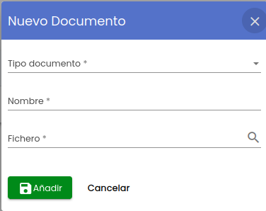
A continuación se describe cada uno de los campos solicitados en este formulario:
- Tipo documento: campo obligatorio donde se debe de seleccionar uno de los tipos de documento que el personal de investigación ha puesto que iba a aportar en el bloque 5 de documentación del formulario de la memoria (ha contestado con el valor "Sí" en el apartado correspondiente al tipo de documento en el bloque 5 del formulario).
- Nombre: campo obligatorio donde se debe de introducir el nombre que se quiere dar al documento, un nombre que lo represente.
- Fichero: campo obligatorio donde se debe de seleccionar el fichero que se quiere adjuntar y entregar a la comisión.
En el caso de pulsar el botón "Añadir Documento" de los bloques de Seguimiento anual, Seguimiento final o Retrospectiva el campo "Tipo documento" no se pedirá como dato en el formulario, ya que en estos casos no hay un tipo de documento.

Una vez introducidos todos los campos obligatorios se activará el botón "Añadir". Si se pulsa el documento se añadirá al listado de documentos de la memoria mostrando un mensaje informativo de que el documento se ha adjuntado correctamente al listado y con el icono de la admiración en el menú de "Documentación" y el mensaje de información en la parte de abajo de la pantalla en la zona del "Área de acciones" para recordar al personal de investigación que debe de pulsar el botón GUARDAR para que los cambios realizados (en este caso un nuevo documento) se consoliden.
3.2.4.2.4 Seguimiento anual¶
Contiene la información necesaria para cumplimentar el formulario del seguimiento anual de una memoria (seguimiento que se hace al año de iniciarse el proyecto). El personal de investigación debe de responder a todas las preguntas.
Únicamente se pueden realizar cambios en el formulario si se cumplen las siguientes condiciones:
- Ha pasado 1 año desde la fecha de inicio de la solicitud de evaluación (campo "fecha inicio" de la pantalla "Datos generales" de la solicitud de evaluación a la que pertenece la memoria)
- La memoria se encuentra en uno de esos estados:
- Fin evaluación:estado al que pasa la memoria de forma automática cuando se le da un dictamen "Favorable" en una convocatoria de reunión del comité
- Completada seguimiento anual:estado al que se pasa la memoria de forma automática cuando el personal de investigación rellena todos los apartados del formulario de seguimiento anual.
- Solicitud modificación seguimiento anual: estado de una memoria cuando ha sido sometida a la evaluación de seguimiento anual y se solicitan modificaciones sobre el formulario de seguimiento anual.
En este caso el formulario se mostrará en modo edición para que el personal de investigación pueda escribir sus respuesta tal y como muestra la siguiente imagen.
En caso de que no se cumplan las condiciones para poder modificar el formulario saldrá el icono del candado para informar de que no se puede cumplimentar o modificar los datos de la pantalla.
Una vez introducidas todas las respuestas del formulario se debe de pulsar el botón "GUARDAR", momento en el cual la memoria se pasará del estado "Fin evaluación" al estado "Completada seguimiento anual" (si ya estaba en el estado "Completada seguimiento anual" se mantiene en este estado). En este momento el personal de investigación podrá ir la pantalla de "Documentación" para aportar los documentos que estime oportunos adjuntar a la evaluación del seguimiento anual.
3.2.4.2.5 Seguimiento final¶
Contiene la información necesaria para cumplimentar el formulario del seguimiento final de una memoria (seguimiento que se hace al año de finalizarse el proyecto). El personal de investigación debe de responder a todas las preguntas.
Únicamente se pueden realizar cambios en el formulario si se cumplen las siguientes condiciones:
- Ha pasado 1 año desde la fecha de fin de la solicitud de evaluación (campo "fecha fin" de la pantalla "Datos generales" de la solicitud de evaluación a la que pertenece la memoria)
-
La memoria se encuentra en uno de esos estados:
- Fin evaluación seguimiento anual: estado al que se pasa la memoria de forma automática cuando se le da un dictamen "Favorable" al seguimiento anual en una convocatoria de reunión del comité.
- Completada seguimiento final: estado al que se pasa la memoria de forma automática cuando el personal de investigación rellena todos los apartados del formulario de seguimiento final.
- En aclaración seguimiento final: estado al que se pasa la memoria de forma automática cuando se le da un dictamen "Solicitud de aclaraciones" al seguimiento final en una convocatoria de reunión del comité.
En este caso el formulario se mostrará en modo edición para que el personal de investigación pueda escribir sus respuesta tal y como muestra la siguiente imagen.
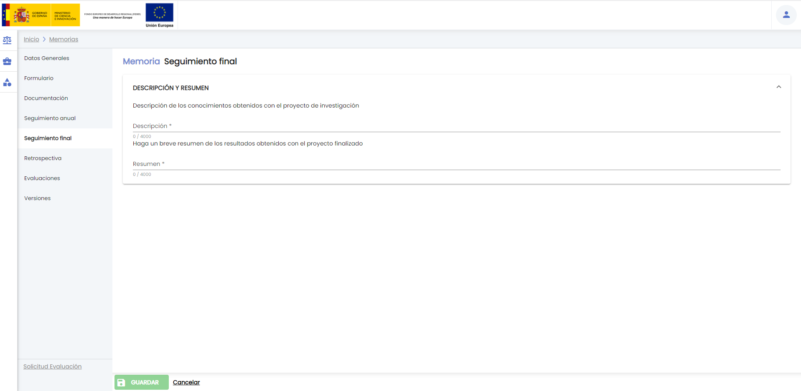
En caso de que no se cumplan las condiciones para poder modificar el formulario saldrá el icono del candado para informar de que no se puede cumplimentar o modificar los datos de la pantalla.
Una vez introducidas todas las respuestas del formulario se debe de pulsar el botón "GUARDAR", momento en el cual la memoria se pasará del estado "Fin evaluación seguimiento anual" al estado "Completada seguimiento final" (si ya estaba en el estado "Completada seguimiento final" o "En aclaración seguimiento final" se mantiene en este estado). En este momento el personal de investigación podrá ir la pantalla de "Documentación" para aportar los documentos que estime oportunos adjuntar a la evaluación del seguimiento final.
3.2.4.2.6 Retrospectiva¶
Contiene la información necesaria para cumplimentar el formulario retrospectiva de una memoria. El personal de investigación debe de responder a todas las preguntas.
Únicamente se mostrará el formulario de Retrospectiva (se muestra la opción de menú "Retrospectiva") si la memoria es de tipo CEEA y el personal de investigación había informado en el apartado 5.3 EVALUACIÓN RETROSPECTIVA del formulario de memoria que requiere retrospectiva.
Si la fecha actual es igual o mayor a la fecha de retrospectiva indicada en la memoria por el investigador y el campo estado de la retrospectiva es Pendiente o Completada el formulario se mostrará en modo edición, sino se mostrará en modo consulta.
Únicamente se pueden realizar cambios en el formulario si se cumplen las siguientes condiciones:
-
- La memoria es del comité CEEA
- El personal de investigación ha informado en el apartado 5.3 EVALUACIÓN RETROSPECTIVA del formulario de memoria que requiere retrospectiva.
- La fecha actual es igual o mayor a la fecha de retrospectiva indicada en el apartado 5.3 EVALUACIÓN RETROSPECTIVA del formulario de memoria.
- No se ha enviado el formulario de retrospectiva a secretaría.
En este caso el formulario se mostrará en modo edición para que el personal de investigación pueda escribir sus respuesta tal y como muestra la siguiente imagen.
Una vez enviado el formulario a secretaría para su evaluación o si la fecha actual es menor a la fecha de retrospectiva indicada en el apartado 5.3 EVALUACIÓN RETROSPECTIVA del formulario de memoria, saldrá el icono del candado para informar de que no se puede cumplimentar o modificar los datos de la pantalla.

Una vez introducidas todas las respuestas del formulario se debe de pulsar el botón "GUARDAR", momento en el cual la retrospectiva va a poder enviarse a secretaría para su evaluación. En este momento el personal de investigación podrá ir la pantalla de "Documentación" para aportar los documentos que estime oportunos adjuntar a la evaluación de la retrospectiva.
3.2.4.2.7 Evaluaciones¶
Listado de evaluaciones por las que ha pasado la memoria y sus seguimientos. Cada vez que el personal de investigación envíe a secretaría una memoria o un seguimiento para su evaluación se mostrará una fila con el resultado de su evaluación, en caso de que no se haya completado la evaluación se muestra la fila pero sin el dictamen y sin el informe de evaluación o favorable.
Es una pantalla de información para el personal de investigación.
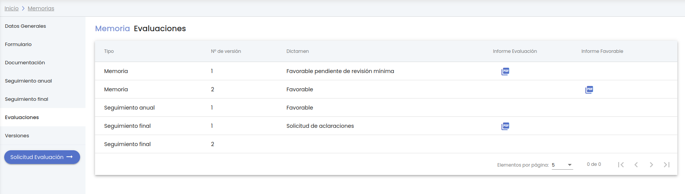
A continuación se detalla el significado de cada una de las columnas del listado:
- Tipo: indica el tipo de evaluación. Los posibles valores que puede tomar dicho campo son:
- Memoria
- Retrospectiva
- Seguimiento anual
- Seguimiento final
- Nº de versión: versión de la evaluación. Se genera una versión de evaluación por cada formulario que se envíe a secretaría. Cada tipo de evaluación tiene su propia versión.
- Dictamen: resultado de la evaluación. Si la evaluación no se completado no se informará de este campo. Dependiendo del tipo de evaluación el valor del dictamen podrá ser.
- Si el tipo de evaluación es Memoria:
- Favorable
- Favorable pendiente de revisión mínima
- Pendiente de correcciones
- No procede evaluar
- Si el tipo de evaluación es Retrospectiva:
- Favorable
- Desfavorable
- Si el tipo de evaluación es Seguimiento anual:
- Favorable
- Solicitud de modificaciones
- Si el tipo de evaluación es Seguimiento final:
- Favorable
- Solicitud de aclaraciones
- Si el tipo de evaluación es Memoria:
- Informe Evaluación: pdf con el informe de evaluación. Sólo estará disponible si la evaluación se ha finalizado y el dictamen no es favorable. Al seleccionar el icono del pdf
 se podrá descargar el informe.
se podrá descargar el informe. - Informe Favorable: pdf con el informe favorable. Sólo estará disponible si la evaluación se ha finalizado y el dictamen es favorable. Las evaluaciones de seguimiento anual y final no tienen informe asociado, sólo las evaluaciones de tipo memoria y retrospectiva. Al seleccionar el icono del pdf se podrá descargar el informe.
3.2.4.2.8 Versiones¶
Listado de informes(pdf) generados a partir de los formularios de memoria, seguimiento anual, seguimiento final o retrospectiva enviados a secretaria. Cada vez que el personal de investigación envíe a secretaría una memoria o un seguimiento para su evaluación se mostrará una fila con la información recogida en el formulario hasta ese momento.
Es una pantalla de información para el personal de investigación.

Al seleccionar el icono del pdf se podrá descargar el informe de la versión.
El nombre de la versión sigue el siguiente formato :
- NumeroRefenciaMemoria_vz, donde z es un número de versión (1,2,3,...) si el tipo de evaluación es Memoria.
- NumeroRefenciaMemoria_SA_vz, donde z es un número de versión (1,2,3,...) si el tipo de evaluación es Seguimiento anual
- NumeroRefenciaMemoria_SF_vz, donde z es un número de versión (1,2,3,...) si el tipo de evaluación es Seguimiento final
- NumeroRefenciaMemoria_R_vz, donde z es un número de versión (1,2,3,...) si el tipo de evaluación es Retrospectiva
3.2.4.3 Eliminar memoria¶
Únicamente se puede eliminar una memoria (se muestra el icono de eliminar) si esta en unos de estos estados :
- En elaboración: estado inicial de la memoria, la memoria al crearse se inicializará a este estado y permanecerá en él hasta que se cumplimente todos los apartados del formulario. Una vez completado todo el formulario se pasará al estado "Completada"
- Completada: estado al que se pasa la memoria de forma automática cuando el personal de investigación rellena todos los apartados de todos los bloques del formulario de memoria. Al finalizar el último el bloque 5 de la memoria se pone a este estado.
Si se pulsa el icono "Eliminar" situado en la última columna "Acciones" de la tabla de memorias de una solicitud de evaluación, se muestra una ventana emergente de confirmación donde se le pregunta al personal de investigación si realmente desea eliminar la memoria.
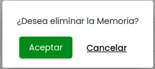
En caso de responder afirmativamente (botón "Aceptar") la memoria desaparecerá del listado de memorias. Se muestra el icono de la admiración en el menú de "Memorias" y el mensaje de información en la parte de abajo de la pantalla en la zona del "Área de acciones" para recordar al personal de investigación que debe de pulsar el botón GUARDAR para que los cambios realizados (en este caso la eliminación de una memoria) se consoliden.
Si se pulsa el botón de "Cancelar" de la ventana emergente se volverá a activar la pantalla del listado de Memorias de la solicitud de evaluación sin eliminar la memoria.
3.2.4.4 Enviar secretaría¶
Acción por la que el formulario de memoria, o de seguimiento anual o de seguimiento final se envía al comité para su evaluación. Sólo la persona que ha creado la solicitud de evaluación y la memoria tiene disponible la acción de "Enviar secretaria", es decir, la persona responsable de la memoria puede modificar los datos de la solicitud de evaluación y de la memoria pero no puede realizar el envío de la memoria al comité. Únicamente se puede enviar a secretaría una memoria (se muestra el icono de "Enviar secretaría") si esta en unos de estos estados :
- Completada: estado al que se pasa la memoria de forma automática cuando el personal de investigación rellena todos los apartados de todos los bloques del formulario de memoria. Al finalizar el último el bloque 5 de la memoria se pone a este estado.
- Favorable Pendiente de Modificaciones Mínimas: estado al que se pasa la memoria de forma automática cuando se le da un dictamen "Favorable pendiente de modificaciones mínimas" en una convocatoria de reunión del comité.
- Pendiente de correcciones: estado al que se pasa la memoria de forma automática cuando se le da un dictamen "Pendiente de correcciones" en una convocatoria de reunión del comité.
- Completada seguimiento anual: se pasa a este estado cuando el personal de investigación rellena el formulario de "Seguimiento anual", es decir, cuando ha pasado 1 año desde la fecha de inicio del proyecto (campo "fecha inicio" de la solicitud de evaluación), la memoria ha conseguido un informe favorable y el personal de investigación ha cumplimentado el formulario de "Seguimiento anual"
- Completada seguimiento final: se pasa a este estado cuando el personal de investigación rellena el formulario de "Seguimiento final", es decir, cuando ha pasado 1 año desde la fecha de fin del proyecto (campo "fecha fin" de la solicitud de evaluación), la memoria ha conseguido un informe favorable del seguimiento anual y el personal de investigación ha cumplimentado el formulario de "Seguimiento final"
- En aclaración seguimiento final: estado al que se pasa la memoria de forma automática cuando se le da un dictamen "Solicitud de aclaraciones" al seguimiento final en una convocatoria de reunión del comité.
Si se pulsa el icono "Enviar secretaría" situado en la última columna "Acciones" de la tabla de memorias de una solicitud de evaluación, se muestra una ventana emergente de confirmación donde se le pregunta al personal de investigación si realmente desea enviar la memoria.
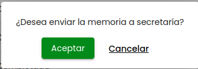
En caso de responder afirmativamente (botón "Aceptar") la memoria se enviará a secretaría para su evaluación y se mostrará un aviso de que la memoria se ha enviado correctamente como el mostrado en la siguiente imagen. Si se pulsa el botón de "Cancelar" de la ventana emergente se volverá a activar la pantalla del listado de Memorias sin realizar ningún cambio sobre la memoria (no se cambia de estado y sigue pendiente de enviarse para su evaluación).
La acción de "Enviar a secretaría" desencadena las siguientes actuaciones:
- Cambio del estado de la memoria:
- Si el estado de la memoria es "Completada" o "Pendiente de correcciones" se cambia al estado "En secretaría"
- Si el estado de la memoria es "Favorable Pendiente de Modificaciones Mínimas" se cambia al estado "En secretaría revisión mínima".
- Si el estado de la memoria es "Completada seguimiento anual" se cambia al estado "En secretaría seguimiento anual"
- Si el estado de la memoria es "Completada seguimiento final" se cambia al estado "En secretaría seguimiento final"
- Si el estado de la memoria es "En aclaración seguimiento final" se cambia al estado "En secretaría seguimiento final aclaraciones"
- Creación del fichero en formato .pdf del formulario de memoria o de seguimiento anual o de seguimiento final con los datos del proyecto y con los del formulario disponible en la pantalla de "Versiones" (Apartado Versiones).
En el caso de que el personal de investigación no haya adjuntado todos los documentos que ha puesto como obligatorios o que dijo que iba a presentar (valor "Sí") en cada uno de los apartados del bloque 5 del formulario de la memoria se le muestra una ventana emergente de confirmación donde se le pregunta si realmente desea enviar la memoria aunque no haya adjuntado toda la documentación obligatoria.

En caso de responder afirmativamente (botón "Aceptar") la memoria se enviará a secretaría para su evaluación y se mostrará el aviso de que la memoria se ha enviado correctamente. Si se pulsa el botón de "Cancelar" de la ventana emergente se volverá a activar la pantalla del listado de Memorias sin realizar ningún cambio sobre la memoria (no se cambia de estado y sigue pendiente de enviarse para su evaluación).
Una vez que la memoria ha sido enviada a secretaría con éxito, el icono de acción  ya no estará disponible. Sin embargo, puede darse un escenario de uso atípico en el que la acción "enviar a secretaría" estaría disponible aun cuando la memoria ya se encuentra en estado "en secretaría":
ya no estará disponible. Sin embargo, puede darse un escenario de uso atípico en el que la acción "enviar a secretaría" estaría disponible aun cuando la memoria ya se encuentra en estado "en secretaría":
- el listado de memorias se encontraba abierto, de forma simultánea, en una pestaña de navegador diferente a la pestaña desde la que se ejecutó el envío a secretaría y la información de la segunda pestaña no fue refrescada (F5 o Ctrl+F5) tras ejecutar la acción de envío de secretaría
Si, en la anterior circunstancia, se pulsase el botón "Enviar secretaría" desde la segunda pestaña se mostrará un mensaje de error.
Este mensaje de error, informa de que la acción "enviar a secretaría" no se puede realizar porque el envío ya fue realizado previamente:
3.2.4.5 Enviar secretaría retrospectiva¶
Acción por la que el formulario de retrospectiva se envía al comité para su evaluación. Sólo la persona que ha creado la solicitud de evaluación y la memoria tiene disponible la acción de "Enviar secretaria retrospectiva", es decir, la persona responsable de la memoria puede modificar los datos de la solicitud de evaluación y de la memoria pero no puede realizar el envío de la memoria al comité. Únicamente se puede enviar a secretaría una memoria (se muestra el icono de "Enviar secretaría retrospectiva") si se cumplen las siguientes condiciones:
- La memoria es del comité CEEA
- El personal de investigación ha informado en el apartado 5.3 EVALUACIÓN RETROSPECTIVA del formulario de memoria que requiere retrospectiva.
- Se ha obtenido el dictamen "Favorable" del formulario de memoria
- El personal de investigación ha completado el formulario de retrospectiva (ver apartado Retrospectiva).
Si se pulsa el icono "Enviar secretaría" situado en la última columna "Acciones" de la tabla de memorias de una solicitud de evaluación, se muestra una ventana emergente de confirmación donde se le pregunta al personal de investigación si realmente desea enviar la retrospectiva.
En caso de responder afirmativamente (botón "Aceptar") la retrospectiva de la memoria se enviará a secretaría para su evaluación. Si se pulsa el botón de "Cancelar" de la ventana emergente se volverá a activar la pantalla del listado de Memorias sin realizar ningún cambio sobre la retrospectiva de la memoria (sigue pendiente de enviarse para su evaluación).
La funcionalidad de "Enviar a secretaría retrospectiva" desencadena la siguiente acción:
- Creación del fichero en formato .pdf del formulario de retrospectiva con los datos del proyecto y con los del formulario disponible en la pantalla de "Versiones" (Apartado Versiones).
3.3 Eliminar solicitud de evaluación¶
Sólo se puede eliminar una solicitud de evaluación sino se ha creado todavía la memoria o si la memoria o memorias asociadas están en los estados "En elaboración" o en "Completada", es decir, no se han enviado a "Secretaría" para su evaluación.
Si se pulsa el icono "Eliminar" situado en la última columna "Acciones" de la tabla de resultados de la búsqueda de solicitudes de evaluación, se muestra una ventana emergente de confirmación donde se le pregunta al personal de investigación si realmente desea eliminar la solicitud de evaluación.
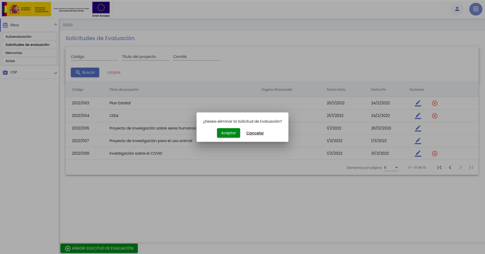
Si se pulsa el botón "Aceptar" de la ventana emergente se realiza el borrado de la solicitud de evaluación y ya no le volverá a salir en la opción de menú de "Solicitudes de evaluación" y será eliminada del sistema. Si se pulsa el botón de "Cancelar" de la ventana emergente se volverá a activar la pantalla del listado de Solicitudes de evaluación sin eliminar la solicitud.
4. Memorias¶
La tercera opción del submenú dentro del menú principal de Ética es "Memorias" que muestra en la parte superior de la pantalla el buscador y en la parte inferior el resultado de la búsqueda sin aplicar ningún filtro tal como muestra la siguiente imagen.
Es un acceso directo a todas las memorias de todas las solicitudes de evaluación creadas por la propia persona que ha introducido sus credenciales en la aplicación. En el caso de que la persona este como responsable de una memoria también le saldrá en el listado para su posible modificación. Es una forma rápida de ir a la edición de una memoria sin necesidad de ir por la opción del menú de "Solicitudes de evaluación".
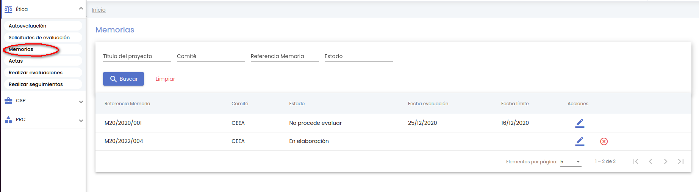
Los campos disponibles en el formulario de la búsqueda son:
- Título del proyecto: nombre o título del proyecto de investigación el cual se va a someter a la evaluación por parte del comité de ética.
- Comité: es un desplegable en el que el personal de investigación puede seleccionar entra las siguiente opciones:
- CEI
- CEEA
- CBE
- Referencia memoria: código que representa a la memoria.
- Estado: estado de la memoria, es un campo desplegable con los distintos estados por lo que puede pasar una memoria. Ver apartado Estados de una memoria para una descripción detallada de cada uno de los posibles estados.
Tras pulsar el botón “Buscar”, se muestra el listado de memorias que cumplan con los parámetros introducidos en el formulario y que sean memorias dadas de alta por el propio personal de investigación o aquellas en las que esta como responsable de la memoria. Los responsables de memoria pueden modificar los datos de la memoria y de su solicitud de evaluación.
Al igual que el resto de listados de la aplicación, el resultado de la búsqueda es un listado compuesto por una tabla paginada, con cinco columnas de información y una última columna de acciones.
Desde este listado el personal de investigación puede realizar las siguientes acciones:

- Editar: este botón representado por el icono y situado en la última columna "Acciones" de la tabla, permite al personal de investigación modificar los datos de una memoria. Disponible para el creador y para el responsable de la memoria.
-
Eliminar: este botón representado por el icono y situado en la última columna "Acciones" de la tabla, permite al personal de investigación eliminar la memoria. Únicamente se puede eliminar una memoria por la persona que ha creado la memoria y si se encuentra en uno de estos estados:
- En elaboración
- Completada
- Enviar a secretaría: este botón representado por el icono y situado en la última columna "Acciones" de la tabla, permite al personal de investigación enviar su memoria a la comisión de ética para su evaluación. Una vez cumplimentado todo el formulario y documentación de la memoria el personal de investigación debe de pulsar este botón para que su memoria sea gestionada y evaluada por la comisión. El responsable de la memoria no podrá enviar a secretaría la memoria, únicamente modificar sus datos.
- Enviar a secretaría retrospectiva: este botón representado por el icono y situado en la última columna "Acciones" de la tabla, permite al personal de investigación enviar la retrospectiva de la memoria a la comisión de ética para su evaluación. Una vez cumplimentado todo el formulario de retrospectiva y su documentación el personal de investigación debe de pulsar este botón para que su retrospectiva de la memoria sea gestionada y evaluada por la comisión. El responsable de la memoria no podrá enviar a secretaría la retrospectiva de la memoria, únicamente modificar sus datos.
A continuación se detalla el significado de cada una de las columnas de información del listado:
- Referencia memoria: código que representa a la memoria, es un dato generado automáticamente y tiene el formato Mxx/YYYY/secuencia donde xx sera 10, 20 o 30, YYYY será el año, secuencia será un código secuencial que empieza en 000 cada año y comité y va hasta 999 si es de tipo "Nueva", si es de tipo "Ratificación" lleva una R al final (Mxx/YYYY/secuenciaR), y si es de tipo "Modificación" se copia la referencia de la memoria original y se pone al final MRX donde X es un secuencial de las modificaciones que haya tenido la memoria.
- Comité: comité que va a realizar la evaluación de le memoria.
- Estado: estado de la memoria, puede tener uno de los valores comentados en el apartado Estados de una memoria
- Fecha evaluación: dependiendo del estado es la fecha de evaluación de la convocatoria de reunión en la que ha sido evaluada la memoria o es la fecha de evaluación de la próxima convocatoria de reunión en la que puede ser evaluada la memoria.
- Fecha límite: dependiendo del estado es la fecha límite de la convocatoria de reunión en la que ha sido evaluada la memoria o fecha límite hasta la que se aceptan memorias de la próxima convocatoria de reunión en la que puede ser evaluada la memoria.
4.1 Editar memoria¶
Funcionalidad descrita dentro del apartado de memorias de una solicitud de evaluación, ver enlace Solicitudes de evaluación - Editar memoria
4.2 Eliminar memoria¶
Funcionalidad descrita dentro del apartado de memorias de una solicitud de evaluación, ver enlace Solicitudes de evaluación - Eliminar memoria
4.3 Enviar a secretaría¶
Funcionalidad descrita dentro del apartado de memorias de una solicitud de evaluación, ver enlace Solicitudes de evaluación - Enviar secretaría
4.4 Enviar a secretaría retrospectiva¶
Funcionalidad descrita dentro del apartado de memorias de una solicitud de evaluación, ver enlace Solicitudes de evaluación - Enviar secretaría retrospectiva
5. Actas¶
Esta opción del menú permite al personal de investigación que a su vez es un miembro activo de un comité, es decir, es un evaluador/a, acceder al listado de actas de su comité para añadir sus comentarios al acta, una vez que se han reunido para la evaluación de memorias de la convocatoria. El evaluador/a podrá añadir comentarios a las distintas memorias evaluadas (tienen que tener un dictamen) por si desea que se modifiquen o se añadan comentarios a la memoria ya evaluada el día de la convocatoria de reunión. Es una revisión a lo acordado en la convocatoria de reunión. El personal de la gestión de ética antes de finalizar el acta revisará estos comentarios por si necesita modificar o añadir los comentarios añadidos a las memorias evaluadas durante la reunión del comité.
La opción del submenú "Actas" (sólo disponible par el personal de investigación que esa a su vez evaluador/a activo/a de uno de los comités) muestra en la parte superior de la pantalla el buscador y en la parte inferior el resultado de la búsqueda sin aplicar ningún filtro tal como muestra la siguiente imagen.
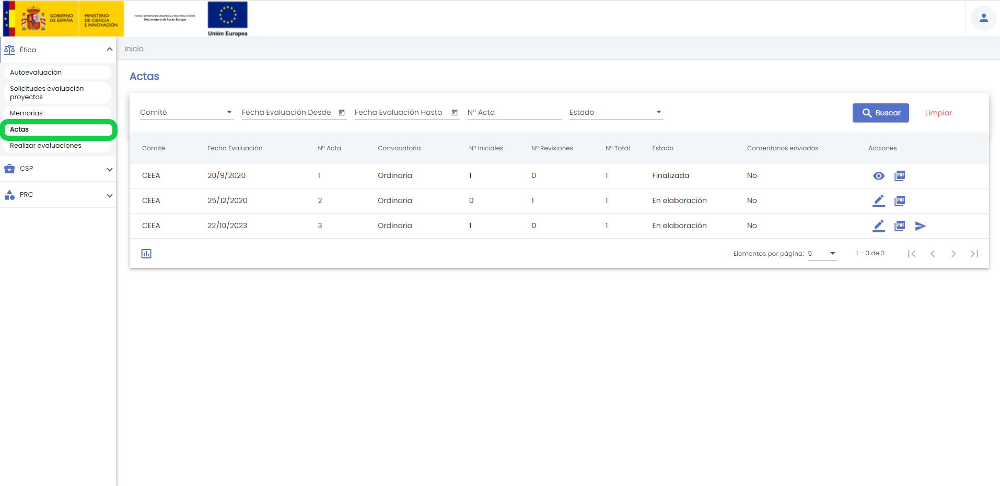
Los campos disponibles en el formulario de la búsqueda son:
- Comité: es un desplegable en el que el personal de investigación puede seleccionar entra las siguiente opciones:
- CEI
- CEEA
- CBE
- Fecha evaluación inicio: campo para introducir la fecha la cual se va a tomar como referencia para obtener las actas cuya fecha de evaluación sea mayor o igual a esta fecha.
- Fecha evaluación fin: campo para introducir la fecha la cual se va a tomar como referencia para obtener las actas cuya fecha de evaluación sea menor o igual a esta fecha.
- Nº Acta: número del acta que se quiere buscar
-
Estado: estado del acta, los posibles valores son:
- En elaboración: se pueden realizar cambios en el acta y en las evaluaciones/seguimientos asociadas a ella.
- Finalizada: no se pueden realizar cambios en el acta ni en las evaluaciones asociadas a ella.
Tras pulsar el botón “Buscar”, se muestra el listado de actas que cumplan con los parámetros introducidos en el formulario y que sean actas pertenecientes al comité donde la persona que ha introducido sus credenciales en la aplicación sea un miembro activo del comité.
Al igual que el resto de listados de la aplicación, el resultado de la búsqueda es un listado compuesto por una tabla paginada, con ocho columnas de información y una última columna de acciones.
A continuación se detalla el significado de cada una de las columnas de información del listado:
- Comité: comité que va a realizar la evaluación de le memoria.
- Fecha evaluación: fecha de la convocatoria de reunión
- Nº acta: número del acta
- Convocatoria: tipo de convocatoria, puede tener uno de los siguientes valores:
- Ordinaria: si una convocatoria es de este tipo únicamente se evaluarán formularios de memoria y retrospectivas.
- Extraordinaria: si una convocatoria es de este tipo únicamente se evaluarán formularios de memoria y retrospectivas.
- Seguimiento: si una convocatoria es de este tipo únicamente se evaluarán formularios de seguimiento anual o final de las memorias.
- Nº iniciales: número de memorias iniciales (nuevas) que se van a revisar o se han revisado en la reunión de evaluación asociada a la acta, es decir, las de revisión 1.
- Nº revisiones: número de memorias reevaluadas que se van a revisar o se han revisado en la reunión de evaluación asociada a la acta, tienen una versión mayor que 1.
- Nº total: número de iniciales mas el número de revisiones
-
Estado: estado del acta, los posibles valores son:
- En elaboración: se pueden realizar cambios en el acta y en las evaluaciones/seguimientos asociadas a ella.
- Finalizada: no se pueden realizar cambios en el acta ni en las evaluaciones asociadas a ella.
- Comentarios enviados: Indica si el/la evaluador/a ha remitido sus comentarios sobre el acta a Secretaría.
Desde este listado el evaluador/a puede realizar las siguientes acciones:
- Ver/consultar:este botón representado por el icono
 y situado en la última columna "Acciones" de la tabla, permite al evaluador/a consultar el acta pero sin poder realizar ningún cambio en ella. Esta acción está disponible cuando el estado del acta es "Finalizada".
y situado en la última columna "Acciones" de la tabla, permite al evaluador/a consultar el acta pero sin poder realizar ningún cambio en ella. Esta acción está disponible cuando el estado del acta es "Finalizada". - Editar:este botón representado por el icono y situado en la última columna "Acciones" de la tabla, permite al evaluador/a aportar sus comentarios al acta seleccionada. Esta acción está disponible cuando el estado del acta es "En elaboración".
- Descargar el fichero:este botón representado por el icono y situado en la última columna "Acciones" de la tabla, permite al evaluador/a descargar el fichero que contiene el informe de acta.
- Enviar comentarios a secretaría: Representada por el icono esta acción solo estará disponible a partir del momento en el que el/la evaluador/a añade uno o más comentarios sobre el acta.
5.1 Editar acta¶
La edición de un acta por parte de un evaluador/a (el botón del icono del lápiz) abre el formulario de "Datos generales" del acta en modo consulta. Únicamente se podrá editar un acta si el estado del acta es "En elaboración", es decir, el personal de gestión no ha finalizado el acta.
La edición de una acta esta formada por los siguientes bloques de información:
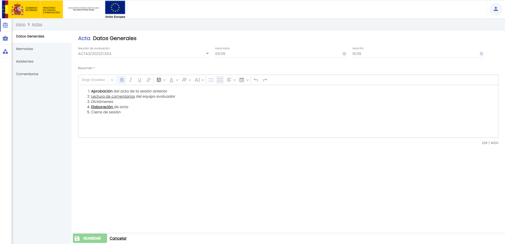
- Datos generales: conjunto de datos de información general sobre el acta. El evaluador/a no podrá modificar ningún dato de esta pantalla, siempre la visualiza en modo consulta.
- Memorias: conjunto de memorias que se van a evaluar o se han evaluado en la convocatoria de reunión asociada al acta. El evaluador/a no podrá modificar ningún dato de esta pantalla, siempre la visualiza en modo consulta.
- Asistentes: conjunto de miembro del comité indicando si han asistido o no a la convocatoria de reunión. El evaluador/a no podrá modificar ningún dato de esta pantalla, siempre la visualiza en modo consulta.
- Comentarios: conjunto de comentarios aportados por los distintos miembros del comité una vez que las memorias han sido evaluadas para informar de posibles errores o discrepancias con lo acordado en la reunión. Es en la única pantalla donde el evaluador/a puede añadir o modificar información.
5.1.1 Datos generales¶
Formulario de consulta con los datos de información básica de una acta. El evaluador/a puede visualizar los campos pero sin modificar su valor.

A continuación se describe cada uno de los campos de este formulario:
- Reunión de evaluación: código de la convocatoria de reunión asociada al acta.
- Hora inicio: hora de inicio de la convocatoria de reunión.
- Hora fin: hora de finalización de la convocatoria de reunión.
- Resumen: resumen de lo acordado en la reunión.
5.1.2 Memorias¶
Listado de memorias que se van a evaluar o se han evaluado en la convocatoria de reunión asociada al acta. El evaluador/a puede visualizar los campos pero sin modificar su valor.
A continuación se detalla el significado de cada una de las columnas del listado:
- Referencia memoria: código identificativo de la memoria.
- Versión: versión de la memoria.
- Dictamen: dictamen obtenido por la memoria. Dependiendo del tipo de evaluación el valor del dictamen podrá ser.
- Si el tipo de evaluación es Memoria:
- Favorable
- Favorable pendiente de revisión mínima
- Pendiente de correcciones
- No procede evaluar
- Si el tipo de evaluación es Retrospectiva:
- Favorable
- Desfavorable
- Si el tipo de evaluación es Seguimiento anual:
- Favorable
- Solicitud de modificaciones
- Si el tipo de evaluación es Seguimiento final:
- Favorable
- Solicitud de aclaraciones
- Si el tipo de evaluación es Memoria:
- Informe:pdf con el informe de evaluación o con el informe favorable dependiendo del dictamen de la memoria.
5.1.3 Asistentes¶
Listado con los miembros del comité indicando la asistencia o no a la reunión de convocatoria asociada al acta.

A continuación se detalla el significado de cada una de las columnas del listado:
- E-mail: correo electrónico del miembro del comité.
- Nombre y apellidos: nombre y apellidos del miembro del comité.
- Asistencia: se indica con el valor "Sí" la asistencia a la reunión y con un valor "No" la no asistencia.
- Motivo: motivo de la ausencia o no asistencia del miembro del equipo a la reunión.
5.1.4 Comentarios¶
Listado de comentarios aportados por los evaluadores/as posteriores a la reunión de convocatoria. El evaluador/a podrá añadir comentarios a las distintas memorias evaluadas (tienen que tener un dictamen) por si desea que se modifiquen o se añadan comentarios a la memoria ya evaluada el día de la convocatoria de reunión. Es una revisión a lo acordado en la convocatoria de reunión.

Desde este listado el evaluador/a puede realizar las siguientes acciones:
- Añadir comentario: este botón se encuentra en la parte inferior del listado de comentarios, permite al evaluador/a introducir un nuevo comentario al acta. El botón estará activo cuando se den las dos circunstancias siguientes
-
-
- Todas las memorias incluidas en la convocatoria de reunión con la que se corresponde el acta deben tener un dictamen asignado. - El/la evaluador/a aún no enviado los comentarios añadidos al acta a Secretaría.
-
En caso de que alguna memoria incluida en la convocatoria de reunión a la que pertenece el acta aún no disponga de dictamen o en el caso en que el/la evaluador/a ya haya enviado los comentarios del acta a secretaría, el botón se mostrará deshabilitado..

2. Editar: esta acción representada por el icono y situada en la última columna "Acciones" de la tabla, permite al evaluador/a modificar el comentario. Los comentarios solamente podrán ser modificado mientras no hubieran sido remitidos a secretaría. La acción sólo está disponible sobre los comentarios introducidos por el/la propio/a evaluador/a. Los comentarios aportados por otros miembros del equipo evaluador no podrán ser modificados. Para los comentarios de otros miembros o en el caso de que el/la evaluador/a ya hubiera remitido sus comentarios a secretaría la acción editar pasará a ser consultar
3. Eliminar: esta acción representada por el icono y situada en la última columna "Acciones" de la tabla, permite evaluador/a eliminar el comentario. Los comentarios solamente podrán ser eliminados mientras no hubieran sido remitidos a secretaría. La acción sólo está disponible sobre los comentarios introducidos por el/la propio/a evaluador/a. Los comentarios aportados por otros miembros del equipo evaluador no podrán ser eliminados.
A continuación se detalla el significado de cada una de las columnas del listado:
- Evaluador: nombre y apellidos del evaluador/a que ha dado de alta el comentario en el acta.
- Memoria: referencia de la memoria a la que se le esta añadiendo el comentario.
- Bloque: bloque del formulario de memoria al que se le esta añadiendo el comentario.
- Apartado: apartado del formulario de memoria al que se le esta añadiendo el comentario.
- Subapartado: subapartado del formulario de memoria al que se le esta añadiendo el comentario.
- Comentarios: texto con el comentario que se quiere aportar en el apartado seleccionado de la memoria.
5.1.4.1 Añadir comentario¶
Al pulsar sobre el botón "Añadir Comentario", se abrirá un formulario como el mostrado en la siguiente imagen.

A continuación se describe cada uno de los campos solicitados en este formulario:
- Memoria: campo obligatorio donde se debe de seleccionar una de las memorias evaluadas en la convocatoria de reunión. Se muestra un listado con la referencia de las distintas memorias.
- Bloque: campo obligatorio donde se debe de seleccionar uno de los bloques que forman el formulario de la memoria seleccionada en el campo "Memoria". Una vez seleccionado el bloque se muestra tal y como muestra la siguiente imagen, los apartados del bloque seleccionado, siendo obligatorio seleccionar un apartado o bien un subapartado del bloque (pulsar sobre uno de los cuadrados)

- Comentario: campo obligatorio de texto libre donde el evaluador/a expone el comentario que quiere aportar en el apartado seleccionado de la memoria.
Al pulsar sobre el botón "Añadir" el comentario se añadirá al listado de comentarios de la acta mostrando el icono de la admiración en el menú de "Comentarios" y el mensaje de información en la parte de abajo de la pantalla en la zona del "Área de acciones" para recordar al evaluador/a que debe de pulsar el botón GUARDAR para que los cambios realizados (en este caso un nuevo comentario) se consoliden.
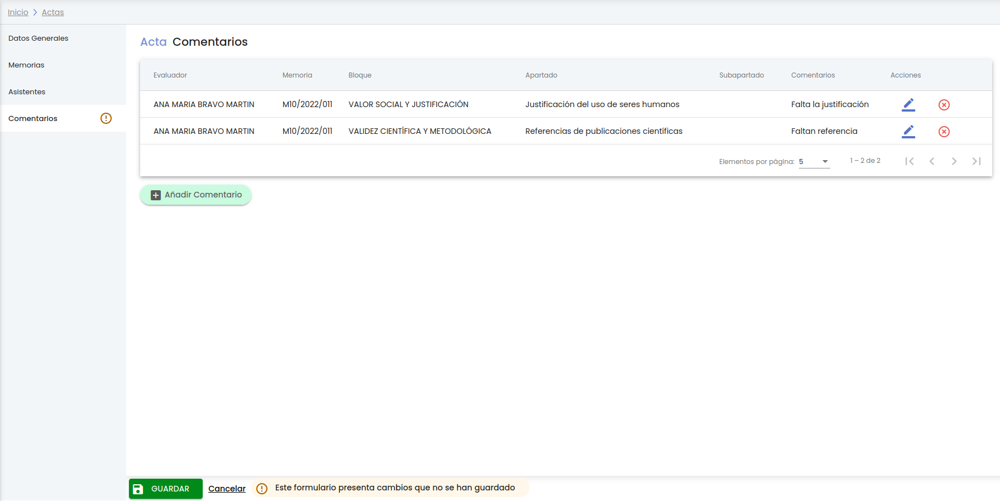
Si se pulsa el botón "GUARDAR" se modifica la acta con los cambios realizados en la pantalla Comentarios (única pantalla donde el evaluador/a puede realizar cambios)
Se muestra un mensaje de que la acta se ha modificado correctamente igual que el de la siguiente imagen.

5.1.4.2 Editar comentario¶
Se abre una pantalla que muestra un formulario con los datos del comentario, es idéntico al utilizado durante el alta de un comentario, dejando la posibilidad de modificar cualquiera de los campos del formulario (ver funcionalidad descrita en el apartado Añadir comentario para mas detalle).
En la siguiente imagen se muestra el formulario de edición de un comentario.
Al pulsar sobre el botón "Aceptar" el comentario se modificará y los cambios se verán reflejados en el listado de comentarios del acta mostrando el icono de la admiración en el menú de "Comentarios" y el mensaje de información en la parte de abajo de la pantalla en la zona del "Área de acciones" para recordar al evaluador/a que debe de pulsar el botón GUARDAR para que los cambios realizados (en este caso una modificación de un comentario) se consoliden.
Si se pulsa el botón "GUARDAR" se modifica la acta con los cambios realizados en la pantalla Comentarios (única pantalla donde el evaluador/a puede realizar cambios)
Se muestra un mensaje de que la acta se ha modificado correctamente igual que el de la siguiente imagen.
5.1.4.3 Eliminar comentario¶
Cuando se pulsa el icono de eliminar comentario se muestra una ventana emergente con un mensaje de confirmación.

En caso de responder afirmativamente (botón "Aceptar") el comentario desaparecerá del listado de comentarios. Se muestra el icono de la admiración en el menú de "Comentarios" y el mensaje de información en la parte de abajo de la pantalla en la zona del "Área de acciones" para recordar al evaluador/a que debe de pulsar el botón GUARDAR para que los cambios realizados (en este caso la eliminación de un comentario) se consoliden.
5.1.5 Enviar comentarios a secretaría¶
Una vez que se añaden los comentarios sobre un acta, éstos deberán ser remitidos a secretaría. Para ello desde la pantalla inicial del listado de actas se dispone del botón de acción "enviar comentarios a secretaría"
Tras pulsar el icono de acción se mostrará un mensaje de confirmación:
Si pulsa el botón Aceptar los comentarios son remitidos a Secretaría, pasando con ello a ser visibles para el personal de gestión (Secretaría) y para el resto de miembros del equipo evaluador. Se mostrará un mensaje informativo cuando la acción de enviar haya finalizado.
Una vez que han sido enviados los comentarios al acta, ésta pasará a estar solamente en modo consulta para el/la evaluador/a. La columna "Comentarios enviados" pasará a tomar el valor "Sí" recordando que los comentarios ya han sido remitida a secretaría.
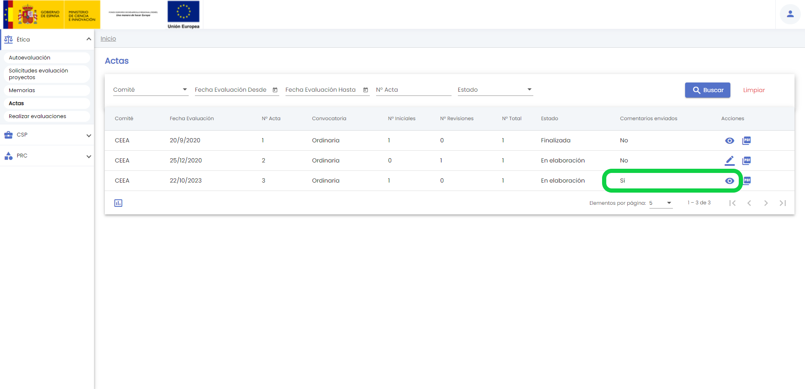
Al acceder al detalle del actas se podrán ver los comentarios remitidos pero no se podrán ni modificar ni eliminar, así como tampoco añadir nuevos comentarios.
5.2 Ver acta¶
La consulta o visualización de un acta por parte de un evaluador/a (el botón del icono del ojo) abre el formulario de "Datos generales" del acta en modo consulta.
La consulta de una acta esta formada por los siguientes bloques de información:
- Datos generales: conjunto de datos de información general sobre el acta. El evaluador/a no podrá modificar ningún dato de esta pantalla, siempre la visualiza en modo consulta.
- Memorias: conjunto de memorias que se van a evaluar o se han evaluado en la convocatoria de reunión asociada al acta. El evaluador/a no podrá modificar ningún dato de esta pantalla, siempre la visualiza en modo consulta.
- Asistentes: conjunto de miembro del comité indicando si han asistido o no a la convocatoria de reunión. El evaluador/a no podrá modificar ningún dato de esta pantalla, siempre la visualiza en modo consulta.
- Comentarios: conjunto de comentarios aportados por los distintos miembros del comité una vez que las memorias han sido evaluadas para informar de posibles errores o discrepancias con lo acordado en la reunión. El evaluador/a no podrá modificar ningún dato de esta pantalla, la visualiza en modo consulta si es estado del acta es "Finalizada".
5.2.1 Datos generales¶
Formulario de consulta con los datos de información básica de una acta. El evaluador/a puede visualizar los campos pero sin modificar su valor.
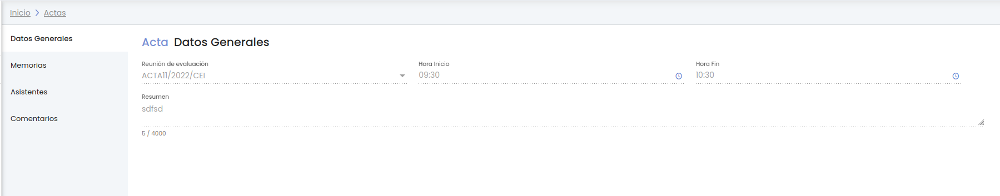
A continuación se describe cada uno de los campos de este formulario:
- Reunión de evaluación: código de la convocatoria de reunión asociada al acta.
- Hora inicio: hora de inicio de la convocatoria de reunión.
- Hora fin: hora de finalización de la convocatoria de reunión.
- Resumen: resumen de lo acordado en la reunión.
5.2.2 Memorias¶
Listado de memorias que se van a evaluar o se han evaluado en la convocatoria de reunión asociada al acta. El evaluador/a puede visualizar los campos pero sin modificar su valor.
A continuación se detalla el significado de cada una de las columnas del listado:
- Referencia memoria: código identificativo de la memoria.
- Versión: versión de la memoria.
- Dictamen: dictamen obtenido por la memoria. Dependiendo del tipo de evaluación el valor del dictamen podrá ser.
- Si el tipo de evaluación es Memoria:
- Favorable
- Favorable pendiente de revisión mínima
- Pendiente de correcciones
- No procede evaluar
- Si el tipo de evaluación es Retrospectiva:
- Favorable
- Desfavorable
- Si el tipo de evaluación es Seguimiento anual:
- Favorable
- Solicitud de modificaciones
- Si el tipo de evaluación es Seguimiento final:
- Favorable
- Solicitud de aclaraciones
- Si el tipo de evaluación es Memoria:
- Informe:pdf con el informe de evaluación o con el informe favorable dependiendo del dictamen de la memoria.
5.2.3 Asistentes¶
Listado con los miembros del comité indicando la asistencia o no a la reunión de convocatoria asociada al acta.
A continuación se detalla el significado de cada una de las columnas del listado:
- E-mail: correo electrónico del miembro del comité.
- Nombre y apellidos: nombre y apellidos del miembro del comité.
- Asistencia: se indica con el valor "Sí" la asistencia a la reunión y con un valor "No" la no asistencia.
- Motivo: motivo de la ausencia o no asistencia del miembro del equipo a la reunión.
5.2.4 Comentarios¶
Listado de comentarios aportados por los evaluadores/as posteriores a la reunión de convocatoria. Los comentarios aportados por los distintos evaluadores/as son una revisión a lo acordado en la convocatoria de reunión.

A continuación se detalla el significado de cada una de las columnas del listado:
- Evaluador: nombre y apellidos del evaluador/a que ha dado de alta el comentario en el acta.
- Memoria: referencia de la memoria a la que se le esta añadiendo el comentario.
- Bloque: bloque del formulario de memoria al que se le esta añadiendo el comentario.
- Apartado: apartado del formulario de memoria al que se le esta añadiendo el comentario.
- Subapartado: subapartado del formulario de memoria al que se le esta añadiendo el comentario.
- Comentarios: texto con el comentario que se quiere aportar en el apartado seleccionado de la memoria.
6. Realizar evaluaciones¶
Esta opción del menú permite al personal investigador que a su vez esta como miembro activo de un comité, es decir, es un evaluador, acceder al listado de evaluaciones de memorias y retrospectivas para aportar sus comentarios sobre la memoria o retrospectiva y así elaborar la "Ficha del Evaluador" (documento disponible en la evaluación de la memoria el día de la convocatoria de reunión para el personal de gestión).
La opción del submenú "Realizar evaluaciones" (sólo disponible para el personal de investigación que esa a su vez evaluador/a activo/a de uno de los comités) muestra en la parte superior de la pantalla el buscador y en la parte inferior el resultado de la búsqueda sin aplicar ningún filtro tal como muestra la siguiente imagen.
Los campos disponibles en el formulario de la búsqueda son:
- Comité: es un desplegable en el que el personal de investigación puede seleccionar entra las siguiente opciones:
- CEI
- CEEA
- CBE
-
Tipo de evaluación: indica el tipo de evaluación (el tipo de formulario que se va a evaluar), puede tener uno de los siguientes valores:
- Memoria
- Retrospectiva
- Fecha evaluación desde: campo para introducir la fecha la cual se va a tomar como referencia para obtener las evaluaciones pertenecientes a la convocatoria de reunión cuya fecha de evaluación sea mayor o igual a esta fecha.
- Fecha evaluación hasta: campo para introducir la fecha la cual se va a tomar como referencia para obtener las evaluaciones pertenecientes a la convocatoria de reunión cuya fecha sea menor o igual a esta fecha.
- Referencia memoria: código identificativo de la memoria.
- Tipo de convocatoria: tipo de la convocatoria de reunión, puede tener uno de los siguientes valores:
- Ordinaria: si una convocatoria es de este tipo únicamente se tendrán evaluaciones de memoria y retrospectivas.
- Extraordinaria: si una convocatoria es de este tipo únicamente se tendrán evaluaciones de memoria y retrospectivas.
- Seguimiento: si una convocatoria es de este tipo únicamente se tendrán evaluaciones de seguimiento anual y seguimiento final.
Tras pulsar el botón “Buscar”, se muestra el listado de evaluaciones que cumplan con los parámetros introducidos en el formulario y que cumplan además las siguientes condiciones:
- memorias en estado "En evaluación" (memorias enviadas a Secretaría y asignadas a un convocatoria de reunión) o en "En evaluación revisión mínima" (memorias con dictamen "Favorable pendiente de modificaciones mínimas" modificadas por el personal de investigación, enviadas a secretaría para su revisión y notificadas por el personal de gestión al par de evaluadores)
- memorias que pertenecen al comité al que pertenece el evaluador/a.
- el evaluador/a no tiene conflicto de interés con ningún miembro del equipo asignado a una tarea en la memoria.
Al igual que el resto de listados de la aplicación, el resultado de la búsqueda es un listado compuesto por una tabla paginada, con seis columnas de información y una última columna de acciones.
A continuación se detalla el significado de cada una de las columnas de información del listado:
- Comité: comité que va a realizar la evaluación de le memoria.
- Tipo evaluación: indica si es una evaluación del formulario de Memoria o del formulario de retrospectiva.
- Tipo memoria: indica si la memoria evaluada es de tipo Nueva, modificación o ratificación
- Fecha evaluación: fecha de la convocatoria de reunión.
- Referencia memoria: código identificativo de la memoria.
- Solicitante: nombre y apellidos de la persona que ha solicitando la evaluación de sus memoria o retrospectiva.
- Versión: versión de la evaluación.
Desde este listado el evaluador/a puede realizar únicamente la siguiente acción:
- Evaluar: este botón representado por el icono y situado en la última columna "Acciones" de la tabla, permite al evaluador/a aportar sus comentarios a la memoria seleccionada para así elaborar el documento "Ficha del Evaluador" disponible en la convocatoria de reunión como un documento más de la memoria. En el caso de que queden 3 días (o valor configurado por el administrador de ética) para la fecha de la convocatoria de reunión ya no se le dejará al evaluador/a aportar sus comentarios por lo que esta acción no estará disponible.
6.1 Evaluar¶
La evaluación de una memoria por parte de un evaluador/a (el botón del icono del lápiz) abre el formulario de "Memoria" de la evaluación en modo consulta. La única pantalla en la que podrá realizar algún cambio el evaluador/a es en la pantalla de "Comentarios", el resto de pantallas muestra información de interés para poder realizar la evaluación.
La evaluación de una memoria o retrospectiva esta formada por los siguientes bloques de información:
- Memoria: conjunto de datos de información general de la memoria y sus evaluaciones anteriores en caso de tenerlas. El evaluador/a no podrá modificar ningún dato de esta pantalla, siempre la visualiza en modo consulta.
- Documentación: conjunto de documentos aportados por el personal de investigación junto al formulario de memoria o de retrospectiva. El evaluador/a no podrá modificar ningún dato de esta pantalla, siempre la visualiza en modo consulta.
- Comentarios: conjunto de comentarios aportados por los distintos miembros del comité (evaluadores) que formarán el documento "Ficha del evaluador". Es en la única pantalla donde el evaluador/a puede añadir o modificar información.
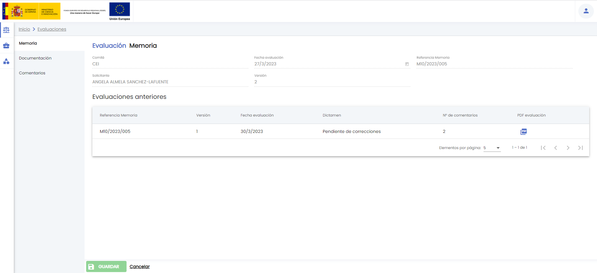
6.1.1 Memoria¶
Formulario de consulta con los datos de información básica de la evaluación de una memoria o retrospectiva. El evaluador/a puede visualizar los campos pero sin modificar su valor.
A continuación se describe cada uno de los campos de este formulario:
- Comité: comité que va a realizar la evaluación de la memoria.
- Fecha evaluación: fecha de evaluación de la convocatoria de reunión en la que se va a evaluar la memoria.
- Referencia memoria: código identificativo de la memoria evaluada.
- Solicitante: nombre y apellidos de la persona que ha solicitando la evaluación de su memoria o retrospectiva.
- Versión: versión que se esta evaluando de la memoria.
-
Evaluaciones anteriores: listado de evaluaciones anteriores en caso de que se este evaluando una memoria con versión mayor a 1, es decir, memorias que no han tenido un dictamen "Favorable" en su primera evaluación. Para cada evaluación se muestra la siguiente información:
- Versión: versión de la evaluación.
- Fecha evaluación: fecha de evaluación de la convocatoria de reunión en la que se evaluó.
- Dictamen: dictamen que se le dio en esa evaluación.
- Nº de comentarios: número de comentarios aportados en la convocatoria de reunión donde se evaluó.
- PDF evaluación: documento con la evaluación (comentarios aportados).
6.1.2 Documentación¶
Listado con toda la documentación relativa a la memoria que se quiere evaluar:
- Informe en .pdf del formulario entregado por el personal de investigación
- Documentación entregada por el personal de investigación adjunta al formulario
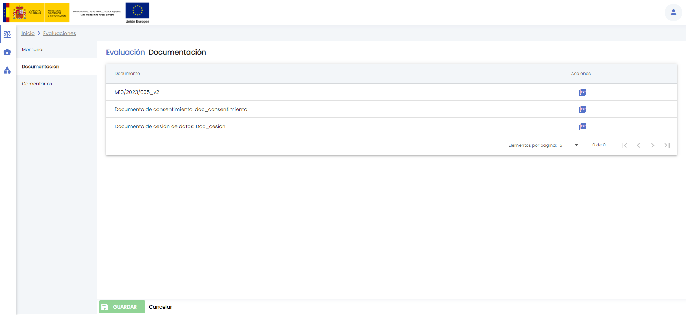
Se podrá pulsar sobre el icono para descargarse el fichero.
6.1.3 Comentarios¶
Listado de comentarios aportados por los evaluadores/as en la revisión de la memoria. Los evaluadores/as son los que realizan un primer estudio de la memoria y aportan sus comentarios para ser vistos el día de la convocatoria de reunión donde se le da el dictamen a la memoria. Con todos los comentarios de los evaluadores/as se elabora el documento "Ficha del evaluador" disponible como un documento aportado a la memoria y que se puede visualizar el día de la convocatoria de reunión por todos los miembros del comité.
Cualquier miembro activo del comité puede aportar sus comentarios a la memoria.
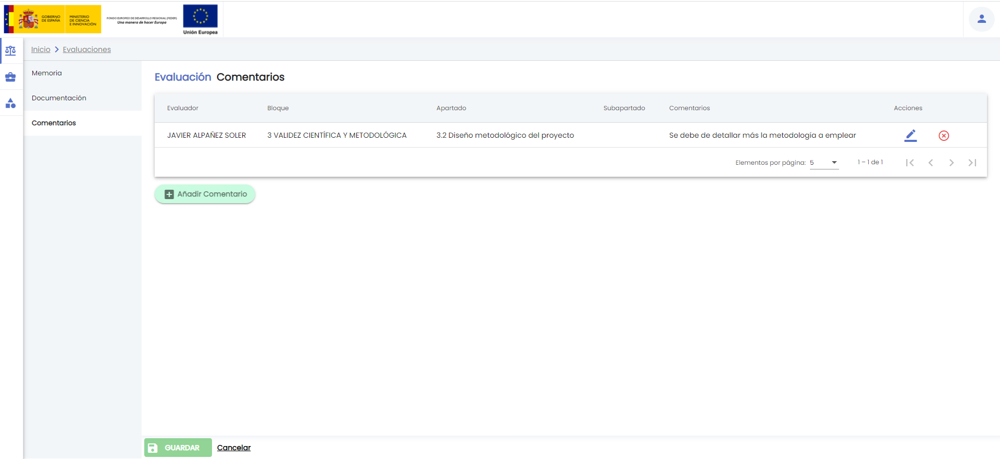
Desde este listado el evaluador/a puede realizar las siguientes acciones:
- Añadir comentario: este botón se encuentra en la parte inferior del listado de comentarios, permite al evaluador/a introducir un nuevo comentario a la evaluación de la memoria. Sólo se podrán añadir comentarios mientras la evaluación no haya sido remitida, es decir, hasta el momento en que los comentarios añadidos se envíen a secretaría (enviar comentarios a secretaría).
- Editar comentario:este botón representado por el icono y situado en la última columna "Acciones" de la tabla, permite al evaluador/a modificar los datos del comentario. Solamente se podrán modificar los comentarios añadidos por el/la propio/a evaluador/a. No se podrán modificar los comentarios de otros/as evaluadores/as. Además, sólo se permitirá la modificación mientras los comentarios no hubieran sido enviados a secretaría.
- Eliminar comentario: este botón representado por el icono y situado en la última columna "Acciones" de la tabla, permite evaluador/a eliminar el comentario. Solamente se podrán eliminar los comentarios añadidos por el/la propio/a evaluador/a. No se podrán eliminar los comentarios de otros/as evaluadores/as. Además, sólo se permitirá la eliminación mientras los comentarios no hubieran sido enviados a secretaría.
A continuación se detalla el significado de cada una de las columnas del listado:
- Evaluador: nombre y apellidos del evaluador/a que ha dado de alta el comentario.
- Bloque: bloque del formulario de memoria al que se le esta añadiendo el comentario.
- Apartado: apartado del formulario de memoria al que se le esta añadiendo el comentario.
- Subapartado: subapartado del formulario de memoria al que se le esta añadiendo el comentario.
- Comentarios: texto con el comentario que se quiere aportar en el apartado seleccionado de la memoria.
6.1.3.1 Añadir comentario¶
Al pulsar sobre el botón "Añadir Comentario", se abrirá un formulario como el mostrado en la siguiente imagen.
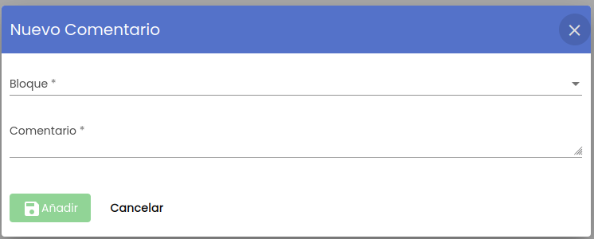
A continuación se describe cada uno de los campos solicitados en este formulario:
- Bloque: campo obligatorio donde se debe de seleccionar uno de los bloques que forman el formulario de la memoria. Una vez seleccionado el bloque se muestra tal y como muestra la siguiente imagen, los apartados del bloque seleccionado, siendo obligatorio seleccionar un apartado o bien un subapartado del bloque (pulsar sobre uno de los cuadrados)
- Comentario: campo obligatorio de texto libre donde el evaluador/a expone el comentario que quiere aportar en el apartado seleccionado de la memoria.
Al pulsar sobre el botón "Añadir" el comentario se añadirá al listado de comentarios de la evaluación mostrando el icono de la admiración en el menú de "Comentarios" y el mensaje de información en la parte de abajo de la pantalla en la zona del "Área de acciones" para recordar al evaluador/a que debe de pulsar el botón GUARDAR para que los cambios realizados (en este caso un nuevo comentario) se consoliden.
Si se pulsa el botón "GUARDAR" se modifica la evaluación con los cambios realizados en la pantalla Comentarios (única pantalla donde el evaluador/a puede realizar cambios)
Se muestra un mensaje de que la evaluación se ha guardado correctamente igual que el de la siguiente imagen.

6.1.3.2 Añadir comentario general¶
Es posible añadir un comentario general a la memoria sin que esté asociado a un apartado concreto del formulario. Para ello, en el desplegable de bloques se ofrece un bloque inicial genérico "Comentarios generales":

Al seleccionar el bloque "Comentarios generales" se mostrará un subapartado general, que deberá ser seleccionado para poder añadir los comentarios oportunos:
Al introducir el texto del comentario se activará el botón "Añadir":
Tras pulsar el botón "Añadir" el comentario se mostrará en la lista de comentarios de la evaluación.
Siguiendo el proceso habitual se deberá pulsar el botón "Guardar" para que la Evaluación queda actualizada con el comentario introducido.
6.1.3.3 Editar comentario¶
Se abre una pantalla que muestra un formulario con los datos del comentario, es idéntico al utilizado durante el alta de un comentario, dejando la posibilidad de modificar cualquiera de los campos del formulario (ver funcionalidad descrita en el apartado Añadir comentario para mas detalle).
En la siguiente imagen se muestra el formulario de edición de un comentario.

Tras introducir los cambios y pulsar sobre el botón "Aceptar" el comentario se modificará y los cambios se verán reflejados en el listado de comentarios de la evaluación mostrando el icono de la admiración en el menú de "Comentarios" y el mensaje de información en la parte de abajo de la pantalla en la zona del "Área de acciones" para recordar al evaluador/a que debe de pulsar el botón GUARDAR para que los cambios realizados (en este caso una modificación de un comentario) se consoliden.
Si se pulsa el botón "GUARDAR" se modifica la evaluación con los cambios realizados en la pantalla Comentarios (única pantalla donde el evaluador/a puede realizar cambios)
Se muestra un mensaje de que la evaluación se ha guardado correctamente igual que el de la siguiente imagen.
6.1.3.4 Eliminar comentario¶
Cuando se pulsa el icono de eliminar comentario se muestra una ventana emergente con un mensaje de confirmación.
En caso de responder afirmativamente (botón "Aceptar") el comentario desaparecerá del listado de comentarios. Se muestra el icono de la admiración en el menú de "Comentarios" y el mensaje de información en la parte de abajo de la pantalla en la zona del "Área de acciones" para recordar al evaluador/a que debe de pulsar el botón GUARDAR para que los cambios realizados (en este caso la eliminación de un comentario) se consoliden.
6.1.4 Enviar comentarios y cerrar evaluación¶
Una vez que se añaden los comentarios deberán ser remitidos a secretaría. Para ello desde la pantalla inicial del listado de evaluaciones se dispone del botón de acción "enviar comentarios a secretaría"
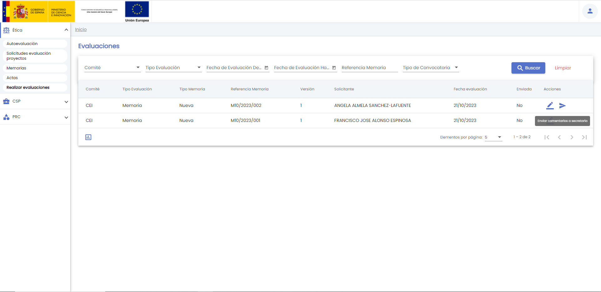
Tras pulsar el icono de acción se mostrará un mensaje de confirmación
Si se pulsa el botón "Aceptar" los comentarios serán enviados a secretaría y la evaluación, por parte del Evaluador/a, se considerará cerrada. No será posible añadir, modificar o eliminar comentarios.
Tras pulsar el botón "Aceptar" se mostrará un mensaje de confirmación

Los comentarios serán visibles para el equipo de gestión (Secretaría), así como para el resto de miembros del equipo evaluador.
Una vez que han sido enviados los comentarios de una evaluación, ésta pasará a estar solamente en modo consulta para el/la evaluador/a. La columna "Enviada" pasará a tomar el valor "Sí" recordando que la evaluación ha sido remitida a secretaría.
Al acceder al detalle de la evaluación se podrán ver los comentarios remitidos pero no se podrán ni modificar ni eliminar, así como tampoco añadir nuevos comentarios.
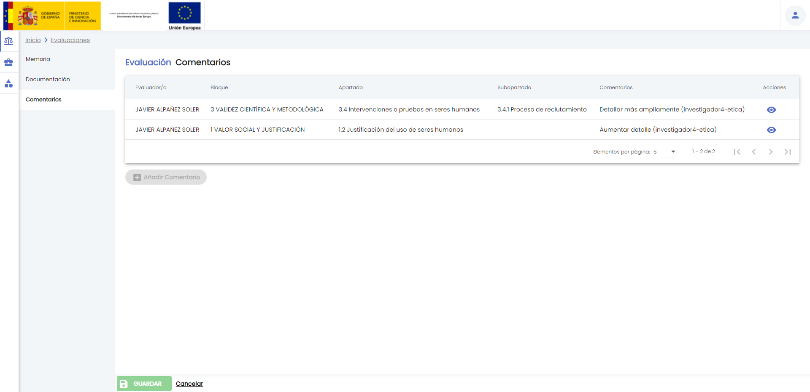
7. Realizar seguimientos¶
Esta opción del menú permite al personal investigador que a su vez esta como miembro activo de un comité, es decir, es un evaluador, acceder al listado de seguimientos (evaluaciones del formulario de seguimiento anual y/o final) de las memorias para aportar sus comentarios sobre el seguimiento anual o final y así elaborar la "Ficha del Evaluador" (documento disponible en el seguimiento de la memoria el día de la convocatoria de reunión para el personal de gestión).
La opción del submenú "Realizar seguimientos" (sólo disponible para el personal de investigación que esa a su vez evaluador/a activo/a de uno de los comités) muestra en la parte superior de la pantalla el buscador y en la parte inferior el resultado de la búsqueda sin aplicar ningún filtro tal como muestra la siguiente imagen.
Los campos disponibles en el formulario de la búsqueda son:
- Comité: es un desplegable en el que el personal de investigación puede seleccionar entra las siguiente opciones:
- CEI
- CEEA
- CBE
- Tipo de evaluación: indica el tipo de evaluación (el tipo de formulario que se va a evaluar), puede tener uno de los siguientes valores:
- Seguimiento anual
- Seguimiento final
- Fecha evaluación desde: campo para introducir la fecha la cual se va a tomar como referencia para obtener las evaluaciones de seguimiento anual y seguimiento final pertenecientes a la convocatoria de reunión cuya fecha de evaluación sea mayor o igual a esta fecha.
- Fecha evaluación hasta: campo para introducir la fecha la cual se va a tomar como referencia para obtener las evaluaciones pertenecientes a la convocatoria de reunión cuya fecha sea menor o igual a esta fecha.
- Referencia memoria: código identificativo de la memoria.
- Tipo de convocatoria: tipo de la convocatoria de reunión, puede tener uno de los siguientes valores:
- Ordinaria: si una convocatoria es de este tipo únicamente se tendrán evaluaciones de memoria y retrospectivas.
- Extraordinaria: si una convocatoria es de este tipo únicamente se tendrán evaluaciones de memoria y retrospectivas.
- Seguimiento: si una convocatoria es de este tipo únicamente se tendrán evaluaciones de seguimiento anual y seguimiento final.
Tras pulsar el botón “Buscar”, se muestra el listado de evaluaciones de seguimiento anual y seguimiento final que cumplan con los parámetros introducidos en el formulario y que cumplan además las siguientes condiciones:
- memorias en estado "En evaluación seguimiento anual" (formulario de seguimiento anual de la memoria enviado a Secretaría y asignado a un convocatoria de reunión) o en "En evaluación seguimiento final" (formulario de seguimiento final de la memoria enviado a Secretaría y asignado a un convocatoria de reunión) o en "En secretaría seguimiento final aclaraciones" (formulario de seguimiento final de la memoria con dictamen "Solicitud de aclaraciones" modificado por el personal de investigación y enviado a secretaría para su revisión)
- memorias que pertenecen al comité al que pertenece el evaluador/a.
- el evaluador/a no tiene conflicto de interés con ningún miembro del equipo asignado a una tarea en la memoria.
Al igual que el resto de listados de la aplicación, el resultado de la búsqueda es un listado compuesto por una tabla paginada, con seis columnas de información y una última columna de acciones.
A continuación se detalla el significado de cada una de las columnas de información del listado:
- Comité: comité que va a realizar la evaluación del formulario de seguimiento anual o final de la memoria.
- Tipo evaluación: indica si es una evaluación del formulario de seguimiento anual o final.
- Tipo memoria: indica si la memoria evaluada es de tipo Nueva, modificación o ratificación
- Fecha evaluación: fecha de la convocatoria de reunión.
- Referencia memoria: código identificativo de la memoria.
- Solicitante: nombre y apellidos de la persona que ha solicitando la evaluación de su formulario de seguimiento anual o final.
- Versión: versión de la evaluación.
Desde este listado el evaluador/a puede realizar únicamente a siguiente acción:
- Evaluar: este botón representado por el icono y situado en la última columna "Acciones" de la tabla, permite al evaluador/a aportar sus comentarios a la memoria seleccionada para así elaborar el documento "Ficha del Evaluador" disponible en la convocatoria de reunión como un documento más de la memoria. En el caso de que queden 3 días (o valor configurado por el administrador de ética) para la fecha de la convocatoria de reunión ya no se le dejará al evaluador/a aportar sus comentarios por lo que esta acción no estará disponible.
7.1 Evaluar¶
La evaluación de un seguimiento anual o final de una memoria por parte de un evaluador/a (el botón del icono del lápiz) abre el formulario de "Datos seguimiento" de la evaluación de seguimiento en modo consulta. La única pantalla en la que podrá realizar algún cambio el evaluador/a es en la pantalla de "Comentarios", el resto de pantallas muestra información de interés para poder realizar la evaluación del seguimiento.
La evaluación de seguimiento anual o final esta formada por los siguientes bloques de información:
- Datos seguimiento: conjunto de datos de información general de la memoria y sus seguimientos anteriores en caso de tenerlos. El evaluador/a no podrá modificar ningún dato de esta pantalla, siempre la visualiza en modo consulta.
- Documentación: conjunto de documentos aportados por el personal de investigación junto al formulario de seguimiento anual o final. El evaluador/a no podrá modificar ningún dato de esta pantalla, siempre la visualiza en modo consulta.
- Comentarios: conjunto de comentarios aportados por los distintos miembros del comité (evaluadores) que formarán el documento "Ficha del evaluador". Es en la única pantalla donde el evaluador/a puede añadir o modificar información.
7.1.1 Datos seguimiento¶
Formulario de consulta con los datos de información básica de la evaluación de seguimiento anual o final de una memoria. El evaluador/a puede visualizar los campos pero sin modificar su valor.
A continuación se describe cada uno de los campos de este formulario:
- Comité: comité que va a realizar la evaluación de seguimiento anual o final de la memoria.
- Fecha evaluación: fecha de evaluación de la convocatoria de reunión en la que se va a evaluar el formulario de seguimiento anual o final de la memoria.
- Referencia memoria: código identificativo de la memoria evaluada.
- Solicitante: nombre y apellidos de la persona que ha solicitando la evaluación de su seguimiento anual o final.
- Versión: versión que se esta evaluando del seguimiento anual o final de la memoria.
-
Evaluaciones anteriores: listado de seguimientos anteriores en caso de que se este evaluando un seguimiento de memoria con versión mayor a 1, es decir, memorias que no han tenido un dictamen "Favorable" en su primer seguimiento. Para cada evaluación de seguimiento se muestra la siguiente información:
- Versión: versión de la evaluación.
- Fecha evaluación: fecha de evaluación de la convocatoria de reunión en la que se evaluó.
- Dictamen: dictamen que se le dio en esa evaluación de seguimiento.
- Nº de comentarios: número de comentarios aportados en la convocatoria de reunión donde se evaluó.
- PDF evaluación: documento con la evaluación (comentarios aportados).
7.1.2 Documentación¶
Listado con toda la documentación relativa al seguimiento que se quiere evaluar:
- Informe en .pdf del formulario entregado por el personal de investigación
- Documentación entregada por el personal de investigación adjunta al formulario
Se podrá pulsar sobre el icono para descargarse el fichero.
7.1.3 Comentarios¶
Listado de comentarios aportados por los evaluadores/as en la revisión del seguimiento de la memoria. Los evaluadores/as son los que realizan un primer estudio del seguimiento de la memoria y aportan sus comentarios para ser vistos el día de la convocatoria de reunión donde se le da el dictamen a la memoria. Con todos los comentarios de los evaluadores/as se elabora el documento "Ficha del evaluador" disponible como un documento aportado a la memoria y que se puede visualizar el día de la convocatoria de reunión por todos los miembros del comité.
Cualquier miembro activo del comité puede aportar sus comentarios a la memoria.
Desde este listado el evaluador/a puede realizar las siguientes acciones:
- Añadir comentario: este botón se encuentra en la parte inferior del listado de comentarios, permite al evaluador/a introducir un nuevo comentario a la evaluación de seguimiento de la memoria. Sólo se podrán añadir comentarios mientras la evaluación no haya sido remitida, es decir, hasta el momento en que los comentarios añadidos se envíen a secretaría (enviar comentarios a secretaría).
- Editar:este botón representado por el icono y situado en la última columna "Acciones" de la tabla, permite al evaluador/a modificar los datos del comentario. Solamente se podrán modificar los comentarios añadidos por el/la propio/a evaluador/a. No se podrán modificar los comentarios de otros/as evaluadores/as. Además, sólo se permitirá la modificación mientras los comentarios no hubieran sido enviados a secretaría.
- Eliminar: este botón representado por el icono y situado en la última columna "Acciones" de la tabla, permite evaluador/a eliminar el comentario. Solamente se podrán eliminar los comentarios añadidos por el/la propio/a evaluador/a. No se podrán eliminar los comentarios de otros/as evaluadores/as. Además, sólo se permitirá la eliminación mientras los comentarios no hubieran sido enviados a secretaría.
A continuación se detalla el significado de cada una de las columnas del listado:
- Evaluador: nombre y apellidos del evaluador/a que ha dado de alta el comentario.
- Bloque: bloque del formulario de seguimiento anual o final al que se le esta añadiendo el comentario.
- Apartado: apartado del formulario de seguimiento anual o final al que se le esta añadiendo el comentario.
- Subapartado: subapartado del formulario de seguimiento anual o final al que se le esta añadiendo el comentario.
- Comentarios: texto con el comentario que se quiere aportar en el apartado seleccionado de la memoria.
7.1.3.1 Añadir comentario¶
Al pulsar sobre el botón "Añadir Comentario", se abrirá un formulario como el mostrado en la siguiente imagen.
A continuación se describe cada uno de los campos solicitados en este formulario:
- Bloque: campo obligatorio donde se debe de seleccionar uno de los bloques que forman el formulario de seguimiento anual o final. En el caso de seguimiento sólo existe un bloque para cada seguimiento llamado "Seguimiento anual" o "Seguimiento final". Una vez seleccionado el bloque se muestra tal y como muestra la siguiente imagen, los apartados del bloque seleccionado, siendo obligatorio seleccionar un apartado el bloque (pulsar sobre uno de los cuadrados)
- Comentario: campo obligatorio de texto libre donde el evaluador/a expone el comentario que quiere aportar en el apartado seleccionado de la memoria.
Al pulsar sobre el botón "Añadir" el comentario se añadirá al listado de comentarios de la evaluación de seguimiento mostrando el icono de la admiración en el menú de "Comentarios" y el mensaje de información en la parte de abajo de la pantalla en la zona del "Área de acciones" para recordar al evaluador/a que debe de pulsar el botón GUARDAR para que los cambios realizados (en este caso un nuevo comentario) se consoliden.
Si se pulsa el botón "GUARDAR" se modifica la evaluación de seguimiento con los cambios realizados en la pantalla Comentarios (única pantalla donde el evaluador/a puede realizar cambios)
Se muestra un mensaje de que la evaluación de seguimiento se ha guardado correctamente igual que el de la siguiente imagen.
7.1.3.2 Añadir comentario general¶
Como en el caso de la evaluación de una memoria inicial, en la evaluación de los seguimientos anuales y finales también es posible introducir un comentario general. Para ello, se dispondrá de un bloque genérico "Comentarios generales"
En el caso del seguimiento anual:
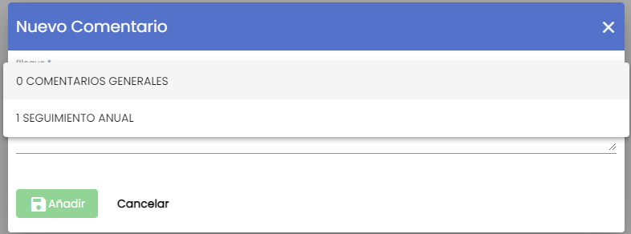
En el caso del seguimiento final:

En ambos casos, tras seleccionar el bloque de "Comentarios generales", se mostrará el árbol de apartados, que solo contendrá un apartado genérico y que debe ser seleccionado para poder aportar el comentario.

Tras pulsar el botón "Añadir" el comentario general se mostrará en el listado de comentarios del seguimiento.
Siguiendo la operativa general del SGI se debe pulsar el botón "Aceptar" para que el Seguimiento sea actualizado y se incluya el comentario general aportado.
7.1.3.3 Editar comentario¶
Se abre una pantalla que muestra un formulario con los datos del comentario, es idéntico al utilizado durante el alta de un comentario, dejando la posibilidad de modificar cualquiera de los campos del formulario (ver funcionalidad descrita en el apartado Añadir comentario para mas detalle).
En la siguiente imagen se muestra el formulario de edición de un comentario.
Tras introducir los cambios y pulsar sobre el botón "Aceptar" el comentario se modificará y los cambios se verán reflejados en el listado de comentarios de la evaluación de seguimiento mostrando el icono de la admiración en el menú de "Comentarios" y el mensaje de información en la parte de abajo de la pantalla en la zona del "Área de acciones" para recordar al evaluador/a que debe de pulsar el botón GUARDAR para que los cambios realizados (en este caso una modificación de un comentario) se consoliden.
Si se pulsa el botón "GUARDAR" se modifica la evaluación de seguimiento con los cambios realizados en la pantalla Comentarios (única pantalla donde el evaluador/a puede realizar cambios)
Se muestra un mensaje de que la evaluación de seguimiento se ha guardado correctamente igual que el de la siguiente imagen.
7.1.3.4 Eliminar comentario¶
Cuando se pulsa el icono de eliminar comentario se muestra una ventana emergente con un mensaje de confirmación.
En caso de responder afirmativamente (botón "Aceptar") el comentario desaparecerá del listado de comentarios. Se muestra el icono de la admiración en el menú de "Comentarios" y el mensaje de información en la parte de abajo de la pantalla en la zona del "Área de acciones" para recordar al evaluador/a que debe de pulsar el botón GUARDAR para que los cambios realizados (en este caso la eliminación de un comentario) se consoliden.
7.1.4 Enviar comentarios de seguimiento a secretaría y cerrar evaluación¶
Una vez que se añaden los comentarios deberán ser remitidos a secretaría. Para ello desde la pantalla inicial del listado de evaluaciones se dispone del botón de acción "enviar comentarios a secretaría",
Tras pulsar el icono de acción se mostrará un mensaje solicitando la confirmación del envío:
Si se pulsa el botón "Aceptar" los comentarios serán enviados a secretaría y la evaluación de seguimiento, por parte del Evaluador/a, se considerará cerrada. No será posible añadir, modificar o eliminar comentarios.
Tras pulsar el botón "Aceptar" se mostrará un mensaje de confirmación.
Los comentarios serán visibles para el equipo de gestión (Secretaría), así como para el resto de miembros del equipo evaluador.
Una vez que han sido enviados los comentarios de una evaluación, ésta pasará a estar solamente en modo consulta para el/la evaluador/a. La columna "Enviada" pasará a tomar el valor "Sí" recordando que la evaluación ha sido remitida a secretaría.
Al acceder al detalle de la evaluación se podrán ver los comentarios remitidos pero no se podrán ni modificar ni eliminar, así como tampoco añadir nuevos comentarios.
8. Anexo - Estados de una memoria¶
El siguiente diagrama muestra los estados por los que irá pasando una memoria de ética.
Se indica a continuación el significado de cada estado:
- En elaboración: estado temporal mientras la solicitud de evaluación ética del proyecto está siendo registrada. Es el estado inicial de la memoria.
- Completada: el/la solicitante ya ha introducido todas las respuestas del formulario de memoria. Una memoria en estado "completada" ya puede ser enviada a secretaría para su evaluación. Una memoria en estado "subsanación" también pasa a estado "completada" una vez que haya sido modificada.
- En secretaría: el/la solicitante pulsa el botón "Enviar a secretaría" asociado a una memoria completada. La memoria junto con el resto de datos de la solicitud de evaluación ética del proyecto se remiten al personal de gestión. La memoria está disponible para ser incluida en la convocatoria de reunión de evaluación del comité correspondiente.
- Subsanación: el personal de gestión revisa la memoria y aporta un comentario general indicando que se debe subsanar la memoria para poder incluirla en convocatoria de reunión de evaluación. Una memoria en "subsanación" podrá ser modificada por el/la solicitante.
- En evaluación: el personal de gestión incluye la memoria en una convocatoria de reunión de evaluación. La memoria está disponible para ser revisada por los miembros del comité correspondiente. Una memoria en estado "en evaluación" no puede ser modificada.
- Fin evaluación: la memoria ha sido evaluada y en la convocatoria de reunión de evaluación se la otorgado dictamen "favorable". La memoria adquiere el estado "fin evaluación" una vez que se haya finalizado el acta asociada a la convocatoria de reunión en la que se ha evaluado (hasta este momento la memoria seguirá en estado "en evaluación" aunque ya disponga de dictamen "favorable").
- Favorable Pendiente de Revisión Mínima: la memoria ha sido evaluada y se le ha otorgado un dictamen "favorable de revisión mínima". La memoria adquiere el estado "favorable pendiente de revisión mínima" una vez que se haya finalizado el acta asociada a la convocatoria de reunión en la que se ha evaluado (hasta este momento la memoria seguirá en estado "en evaluación" aunque ya disponga de dictamen). Una memoria en estado "favorable pendiente de revisión mínima" deberá ser modificada por el/la investigador/a solicitante y volver a ser remitida a secretaría. No será necesario que vuelva a entrar en una convocatoria de reunión de evaluación posterior, el personal de gestión podrá revisar la memoria y asignarle nuevo dictamen sin esperar a la siguiente convocatoria de reunión.
- Pendiente de correcciones: la memoria ha sido evaluada y se le ha otorgado un dictamen "pendiente de correcciones". La memoria adquiere el estado "pendiente de correcciones" una vez que se haya finalizado el acta asociada a la convocatoria de reunión en la que se ha evaluado (hasta este momento la memoria seguirá en estado "en evaluación" aunque ya disponga de dictamen). Una memoria en estado "pendiente de correcciones" debe de ser modificada por el/la investigador/a solicitante y deberá ser remitida nuevamente a secretaría. Una vez en secretaría, la memoria deberá entrar en una nueva convocatoria de reunión de evaluación.
- No procede evaluar: la memoria ha sido evaluada y se le ha otorgado un dictamen "no procede evaluar". La memoria adquiere el estado "no procede evaluar" una vez que se haya finalizado el acta asociada a la convocatoria de reunión en la que se ha evaluado (hasta este momento la memoria seguirá en estado "en evaluación" aunque ya disponga de dictamen). Una memoria en estado "no procede evaluar" no podrá ser modificada. El ciclo de vida de la memoria finalizará transcurridos un número de días determinado (configurados en el SGI), tomando el estado final "archivada".
- Desfavorable: La memoria ha sido evaluado y se le ha dado el dictamen "desfavorable". La memoria adquiere el estado "desfavorable" una vez que se haya finalizado el acta asociada a la convocatoria de reunión en la que se ha evaluado (hasta este momento la memoria seguirá en estado "en evaluación" aunque ya disponga de dictamen). Una memoria en estado "desfavorable" no podrá ser modificada. El ciclo de vida de la memoria finalizará transcurridos un número de días determinado (configurados en el SGI), tomando el estado final "archivada".
- En secretaría revisión mínima: una memoria cuyo estado sea "favorable pendiente de revisión mínima" tomará el estado "en secretaría revisión mínima" cuando el/la investigador/a solicitante remite nuevamente la memoria a secretaría, tras haber introducido los cambios oportunos.
- En evaluación revisión mínima: el personal de gestión notifica una memoria en estado "En secretaría revisión mínima" para que los evaluadores puedan volver a evaluarla. Una memoria en estado "En evaluación revisión mínima", podrá ser revaluada sin necesidad de incluir la memoria en una nueva convocatoria de reunión. La memoria está disponible para ser revisada por los miembros del comité correspondiente.
- Completada seguimiento anual: Una memoria en estado "fin evaluación" (dictamen "favorable") tendrá activado el formulario de "seguimiento anual" transcurrido un año desde la fecha establecida como inicio del proyecto. Cuando el formulario de seguimiento anual esté completado la memoria adquiere el estado "completada seguimiento anual".
- En secretaría seguimiento anual: Una memoria en estado "completada seguimiento anual" deberá ser remita a secretaría para que sea evaluada. Cuando el/la investigador/a solicitante remite el formulario de seguimiento anual a secretaría para su evaluación, la memoria adquiere el estado "en secretaría seguimiento anual".
- En evaluación seguimiento anual: Una memoria en estado "en secretaría seguimiento anual" debe de ser incluida en una convocatoria de reunión de evaluación de tipo seguimiento. Cuando la memoria es incluida en una convocatoria de reunión adquiere el estado "en evaluación seguimiento anual".
- Solicitud modificación seguimiento anual: La memoria ha sido evaluada en su fase de seguimiento anual y se le ha otorgado dictamen "solicitud de modificación". La memoria adquiere el estado "solicitud de modificación" una vez que se haya finalizado el acta asociada a la convocatoria de reunión de seguimiento en la que se ha evaluado (hasta este momento la memoria seguirá en estado "en evaluación seguimiento anual" aunque ya disponga de dictamen). Una memoria en estado "solicitud de modificación" deberá ser modificada por el/la investigadora/a solicitante. Se deberá modificar el formulario de seguimiento anual de acuerdo a los comentarios recibidos en la evaluación.
- En secretaría seguimiento anual modificación: una memoria cuyo estado sea "solicitud modificación seguimiento anual" tomará el estado "en secretaría seguimiento anual modificación" cuando el/la investigador/a solicitante remite nuevamente la memoria a secretaría, tras haber introducido los cambios oportunos en el formulario de seguimiento anual. Una memoria en estado "en secretaría seguimiento anual modificación", podrá ser reevaluada por el personal de gestión sin necesidad de incluir la memoria en una nueva convocatoria de reunión.
- Fin evaluación seguimiento anual: La memoria ha sido evaluada en su fase de seguimiento anual y se le ha otorgado dictamen "favorable". La memoria adquiere el estado "fin evaluación seguimiento anual" una vez que se haya finalizado el acta asociada a la convocatoria de reunión de seguimiento en la que se ha evaluado (hasta este momento la memoria seguirá en estado "en evaluación seguimiento anual" aunque ya disponga de dictamen). El formulario de seguimiento anual de una memoria ya no se podrá modificar una vez la memoria disponga del estado "fin evaluación seguimiento anual".
- Completada seguimiento final: Una memoria en estado "fin evaluación seguimiento anual" tendrá disponible el formulario de seguimiento final una vez que haya transcurrido un año desde la fecha de fin de proyecto indicada en la solicitud de evaluación. Cuando el/la investigador/a solicitante haya cumplimentado íntegramente las preguntas obligatorias del formulario de seguimiento final, la memoria adquiere el estado "completada seguimiento final".
- En secretaría seguimiento final: Una memoria en estado "completada seguimiento final" debe ser remitida a secretaría para que se pueda proceder a su evaluación. Cuando el/la investigador/a solicitante remite una memoria en estado "en secretaría seguimiento final" a secretaría, ésta adquiere el estado "en secretaría seguimiento final".
- En evaluación seguimiento final: Una memoria en estado "en secretaría seguimiento final" debe de ser incluida en una convocatoria de reunión de tipo seguimiento para poder ser evaluada. En ese momento la memoria adquiere el estado "en evaluación seguimiento final".
- Fin evaluación seguimiento final: La memoria ha sido evaluada en su fase de seguimiento final y se le ha otorgado dictamen "favorable". La memoria adquiere el estado "fin evaluación seguimiento final" una vez que se haya finalizado el acta asociada a la convocatoria de reunión de seguimiento en la que se ha evaluado (hasta este momento la memoria seguirá en estado "en evaluación seguimiento final" aunque ya disponga de dictamen). El formulario de seguimiento final de una memoria ya no se podrá modificar una vez la memoria disponga del estado "fin evaluación seguimiento final". El ciclo de la memoria habrá finalizado tras alcanzar el estado "fin evaluación seguimiento final".
- En aclaración seguimiento final: La memoria ha sido evaluada en su fase de seguimiento final y se le ha otorgado dictamen "solicitud de aclaraciones". La memoria adquiere el estado "en aclaración seguimiento final" una vez que se haya finalizado el acta asociada a la convocatoria de reunión de seguimiento en la que se ha evaluado (hasta este momento la memoria seguirá en estado "en evaluación seguimiento final" aunque ya disponga de dictamen). Una memoria en estado "en aclaración seguimiento final" deberá ser modificada por el/la investigadora/a solicitante. Se deberá modificar el formulario de seguimiento final de acuerdo a los comentarios recibidos en la evaluación.
- En secretaría seguimiento final aclaraciones: una memoria cuyo estado sea "en aclaración seguimiento final" tomará el estado "en secretaría seguimiento final" cuando el/la investigador/a solicitante remite nuevamente la memoria a secretaría, tras haber introducido los cambios oportunos en el formulario de seguimiento final. Una memoria en estado "en secretaría seguimiento final", podrá ser reevaluada por el personal de gestión sin necesidad de incluir la memoria en una nueva convocatoria de reunión de seguimiento.
- Archivado: es el estado final que adquieren las memorias cuyo estado previo es "desfavorable", "pendiente de correcciones", "pendiente de revisión mínima", "solicitud de modificación" o "en aclaración seguimiento final" y hayan transcurrido un número de días determinado, configurados en el SGI. Una memoria en estado "archivado" no podrá ser modificada. Su ciclo de vida ha concluído.